Manual do jogador · versão 2.67
Tudo evolui com o uso.
Minere e você minera mais rápido, lute e você bate mais forte. Forje itens com raridade, crie magias, monte uma colônia, funde um reino, feche portais e suba a Torre Infinita. O pacote de recursos do servidor deixa tudo mais bonito, mas não é obrigatório.
🧭Primeiros passos
Como as coisas funcionam
- Os atributos sobem fazendo a atividade. Veja em /atributos.
- Quase tudo é criado por ritual: coloque um bloco e jogue os itens em cima dele com Q. O bloco vira uma "estação".
- Manual no jogo (2.59): /manual abre o Manual numa janela com busca; /manual link manda o link deste site. Ele também está em Esc → Links do servidor.
- Abra o /rpg: no topo ele mostra o seu próximo passo, e embaixo estão as 7 categorias com tudo do servidor.
- Ficou com dúvida? /guia <palavra> (ex.:
/guia reciclar) mostra o assunto com o ritual desenhado em itens. O livro continua com /guia livro. - Achou um item e não sabe o que é? Segure na mão e use /guia mão (ou o botão O que é isso? no /rpg). Na primeira vez que você encontra algo novo aparece uma dica com [ver como]; /guia dicas desliga. As novidades da versão ficam no botão Novidades do /rpg.
- Clique com o botão direito numa estação para abrir o menu dela.
Controles úteis
| Ação | O que faz |
|---|---|
| Q em cima de um bloco | Faz rituais (criar estações) |
| Agachar + F | Usa a habilidade da classe selecionada |
| Agachar + clique esquerdo no ar | Troca a habilidade da classe |
| Grimório: clique direito / esquerdo | Lança a magia / troca de magia |
| Grimório: agachar + direito | Abre o grimório |
| Agachar + clique numa estação | Abre o bloco original (ex.: bigorna, defumador) |
Jornada do Aventureiro
/jornada: 12 passos que ensinam o básico na ordem, cada um com recompensa. Eles se completam sozinhos quando você faz a coisa:
- Um atributo no nível 5
- Forjar um item
- Soltar 5 combos
- Cozinhar um prato
- Criar algo na Bancada Alquímica
- Escolher uma classe
- Lançar 10 magias
- Criar o Marco do Território
- Seguir um deus
- Descobrir uma estrutura
- Vencer uma masmorra
- Fundar a colônia
📈Atributos
13 atributos, do nível 0 ao 100. Chegar no 50 leva uns 20% do caminho; o 100 é para quem joga muito.
| Atributo | Como ganha XP | No nível 100 |
|---|---|---|
| ⛏ Mineração | Quebrar blocos de picareta (minério vale mais) | +100% velocidade de mineração, 50% de minério em dobro |
| ♣ Corte de Madeira | Quebrar troncos | +100% velocidade no tronco, 50% de tronco em dobro |
| » Corrida | Correr | +20% de velocidade |
| ⬆ Pulo e Queda | Pular e levar dano de queda | +30% pulo, +5 blocos de queda segura, −50% dano de queda |
| ⚔ Combate | Matar mobs, jogadores e chefes | +3 de dano, +5 corações |
| ⚒ Ferraria | Forjar, refinar, subir para netherite, fundir lingotes | Itens forjados mais raros e mais fortes |
| ✦ Arcano | Infundir, lançar magias, descobrir segredos | +150 de mana, mais carga, partes do corpo e magias |
| ≈ Natação | Nadar e andar debaixo d'água | +50% agilidade na água, +3 de fôlego, +60% mineração submersa |
| ☘ Agricultura | Colher plantações maduras e frutas | 50% de colheita dupla, mais qualidade, toque verde, colheita gigante |
| ♨ Culinária | Cozinhar na Cozinha | Libera receitas, pratos melhores, buffs +50% mais longos |
| ♞ Doma | Domar, cruzar, vincular companheiros, andar montado | 5 companheiros, 6 componentes, +100% vida e +50% dano deles |
| ⚓ Pesca | Pescar (raros, tesouros e criaturas valem mais) | Isca 50% mais rápida, 30% de peixe em dobro, 15% de peixe raro |
| ⚗ Alquimia | Criar na Bancada Alquímica, engastar, fazer poções | Elixires 60% mais longos, 40% de render o dobro |
O que não dá XP (anti-farm)
- Blocos colocados por jogadores e pedra de gerador.
- Pular parado no mesmo lugar; ser levado pela correnteza.
- Melancia e abóbora colocadas; plantação verde.
- Mobs de spawner dão só 25% do XP.
- Matar o mesmo jogador seguidas vezes, ou uma conta do mesmo IP.
Materiais raros
Fragmento de Forja, Pedra de Proteção, Essência Primordial, Mapa Rasgado, Página do Livro das Lendas e os núcleos dos chefes.
Eles não podem ser gastos em receitas comuns (bancada, bigorna, fornalha, poções), só nos sistemas do plugin.
⌨Comandos
Clique num comando para copiar.
| Comando | O que faz |
|---|---|
| /atributos | Seus atributos (e os acessórios) |
| /guia <palavra>, /guia livro | Busca um assunto no Guia; o livro |
| /guia mão, /guia dicas, /guia novidades | Explica o item da mão; liga/desliga as dicas; o que entrou na versão |
| /jornada | Jornada do Aventureiro (primeiros passos) |
| /forja | Raridades e suas chances |
| /grimorio | Grimório: magias, criador, secretas, maestria |
| /classe | Árvore de classes, caminho e habilidades |
| /combos | Combos de arma: proficiência e golpes |
| /postura | Postura de combate |
| /mochila | Sua mochila |
| /deus, /deus milagre | Sua fé e o milagre |
| /estrelas | Diário das Estrelas |
| /enciclopedia | Enciclopédia do Mundo |
| /cronista | Sua campanha (capítulo atual e entregar) |
| /talentos | Árvore de talentos |
| /renascer | Renascer (o que falta e confirmar) |
| /diario | Diário de Viagem |
| /recordes | Recordes do servidor |
| /sentar | Sentar no chão (ou levantar) |
| /rpg | Menu central: próximo passo, categorias e atalhos |
| /placar | Placar lateral |
| /album | Álbum de Cartas (pacotes, pó, marcos e baralho) |
| /duelo <jogador|aceitar|abrir|desistir> | Duelo de Cartas entre jogadores |
| /segredos | Segredos |
| /lendas | Livro das Lendas |
| /locais | Locais Ocultos que você achou |
| /party, /pc | Menu e chat da party |
| /territorio | Menu do território (mapa, bordas, membros...) |
| /colonia | Sua colônia |
| /reino | Seu reino: cargos, tesouro, províncias, leis (/reino lei), mapa, guerra e paz |
| /pets | Seus companheiros |
| /masmorra sair | Sai da masmorra sem perder nada |
| /portais | Portais abertos e quando transbordam |
| /sombras | Exército das sombras (Soberano) |
| /torre, /torre ranking, /torre sair | Torre Infinita |
| /peixes | Diário do Pescador |
| /alquimia | Receitas de alquimia |
| /acessorios | Seus espaços de acessório |
| /guardaroupa | Aparência da armadura |
| /receitas | Livro de receitas da Cozinha |
| /bestiario | Monstros derrotados e marcos |
| /calendario | Estação, lua, clima e eventos do céu |
| /maldicao | Sua maldição (e transformar-se) |
| /titulos, /missoes | Títulos e missões de aldeões |
| /cosmeticos, /chapeu, /tag | Cosméticos e tag |
🛠Receitas da bancada
Tudo o que o plugin acrescenta à bancada, lido direto do plugin. As letras na grade dizem onde vai cada ingrediente; em receitas sem forma, a posição tanto faz. Use a busca do topo com o nome do item ou de um ingrediente.
Onde se faz cada coisa
| Onde | O que sai |
|---|---|
| Bancada (esta seção) | Armas do arsenal, artefatos, flechas, frascos, ferramentas de mineração, Livro do Criador |
| Estações de ritual | Jogue os itens (tecla Q) em cima do bloco certo: Forja, Cozinha, Altar, Comedouro, Estábulo e mais 25 |
| Forja do Ferreiro | Armas e armaduras com raridade, refino, gemas e Netherite |
| Bancada Alquímica | Elixires, componentes, gemas e acessórios |
| Infusor e grimório | Magias (essências + forma), pergaminhos e o cajado |
| Curtume, Tear e Ateliê | Couros, tecidos e os conjuntos de armadura leve |
| Cozinha | Os pratos (inclusive os de monstro) e o que cada um faz |
| Barril, Colmeia, Canteiro, Tacho | Bebidas, méis, ervas, artesanato e trufas |
| Mesa Rúnica e Círculo | Runas e transmutação |
Arsenal
Adaga
Rápida. Pelas costas: +50% de dano. Uma em cada mão: Lâminas Duplas.
- bLingote de Ferro
- cGraveto
Arsenal
Faca de Arremesso
Clique direito arremessa (depois recolha). Acerto à distância: dano x1,3.
- aLingote de Ferro
- bPena
Arsenal
Machadinha
Clique direito arremessa (depois recolha). Pesada: dano x1,7.
- aLingote de Ferro
- bLingote de Ferro
- cGraveto
- dPena
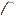
Arsenal
Foice
Corte largo. Cada inimigo derrotado com ela cura 1,5 ❤.
- aLingote de Ferro
- bLingote de Ferro
- cLingote de Ferro
- fGraveto
- hGraveto
Arsenal
Bastão
Mais alcance e empurrão. Bom para segurar a linha.
- cLingote de Ferro
- eGraveto
- gGraveto
Arsenal
Chicote
Alcança 3 blocos mais longe que as outras armas.
- cLingote de Ferro
- eCouro
- gGraveto
Armas dos minérios
Montante de Mitrilo
Duas mãos: pesado e com varredura. Com algo na outra mão, -40% de dano.
- bLingote de Mitrilo
- eLingote de Mitrilo
- gDiamante
- hGraveto
- iDiamante
Armas dos minérios
Bumerangue de Âmbar
Clique direito arremessa: ele vai, volta e acerta nas duas vezes.
- aTábuas (qualquer madeira)
- bÂmbar
- dTábuas (qualquer madeira)
Armas dos minérios
Leques de Guerra de Jade
Rápidos. Às vezes uma rajada de vento empurra quem está em volta.
- aJade
- bPapel
- cJade
- eGraveto
Armas dos minérios
Arpão de Pérola
Clique direito arpoa: puxa o alvo até você (ou você até o bloco). Na água, dano x1,5.
- cPérola do Mar
- eLingote de Ferro
- gGraveto
Armas dos minérios
Mangual de Gelo
Cada golpe deixa o inimigo lento; às vezes congela.
- cCristal de Gelo
- eCorrente de Ferro
- gGraveto
Armas dos minérios
Garras de Pedra-Sangue
Muito rápidas. Cada golpe rouba 10% do dano em vida.
- aPedra-Sangue
- cPedra-Sangue
- dLingote de Ferro
- eLingote de Ferro
- fLingote de Ferro
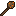
Armas dos minérios
Clava Fumegante
Com Turfa no inventário, os golpes queimam (1 Turfa a cada 8 queimas).
- aTurfa
- bTronco de Mangue ou Tronco de Mangue Descascado ou Madeira de Cerejeira Descascada ou Tronco da Selva Descascado ou Caule Carmesim ou Caule Distorcido Descascado ou Hifas Distorcidas ou Tronco de Abeto ou Madeira de Carvalho ou Tronco de Álamo ou Tronco de Carvalho Escuro ou Madeira de Carvalho Pálido ou Madeira de Álamo ou Madeira de Bétula ou Tronco de Acácia ou Madeira de Mangue Descascada ou Tronco de Abeto Descascado ou Caule Carmesim Descascado ou Madeira da Selva ou Caule Distorcido ou Madeira de Mangue ou Madeira de Acácia ou Madeira de Carvalho Pálido Descascada ou Madeira de Carvalho Escuro ou Madeira de Abeto ou Hifas Carmesim Descascadas ou Tronco de Carvalho Descascado ou Madeira de Cerejeira ou Madeira de Acácia Descascada ou Hifas Distorcidas Descascadas ou Madeira de Álamo Descascada ou Tronco de Acácia Descascado ou Madeira de Abeto Descascada ou Madeira de Bétula Descascada ou Madeira da Selva Descascada ou Tronco de Carvalho Pálido Descascado ou Tronco de Carvalho ou Tronco de Bétula Descascado ou Tronco de Álamo Descascado ou Madeira de Carvalho Descascada ou Tronco de Cerejeira Descascado ou Tronco de Bétula ou Madeira de Carvalho Escuro Descascada ou Tronco de Cerejeira ou Tronco da Selva ou Tronco de Carvalho Escuro Descascado ou Tronco de Carvalho Pálido ou Hifas Carmesim
- cGraveto
Armas dos minérios
Lança de Basalto
Longa. Cada golpe põe fogo; em quem já queima, +25% de dano.
- cCristal de Magma
- eBasalto Polido
- gVara de Blaze
Utilidade
Gancho de Escalada
Lance num bloco e recolha: você é puxado até lá.
Sem forma: em qualquer lugar da grade
- Vara de Pesca
- Gancho de Armadilha
- 3× Lingote de Ferro
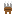
Utilidade
Garras de Escalada
De frente para a parede, segure pular para subir.
- aSílex
- cSílex
- dLingote de Ferro
- eCouro
- fLingote de Ferro
Utilidade
Corda de Rapel
Na beira de um barranco, clique para descer pela corda.
- aLinha
- bLinha
- cLinha
- dLinha
- eGancho de Armadilha
- fLinha
- gLinha
- hLinha
- iLinha
Utilidade
Pêndulo do Rabdomante
Na mão, balança mais forte perto de estruturas não
- aLinha
- bPepita de Ouro
- cFragmento de Ametista
Utilidade
Cantil
Clique olhando para a água para encher (3 goles).
- bLinha
- dCouro
- eFrasco de Vidro
- fCouro
- hCouro
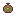
Utilidade
Bolsa de Sementes
Clique na terra arada para plantar em 3×3.
- aLinha
- cLinha
- dCouro
- eSementes de Trigo
- fCouro
- gCouro
- hCouro
- iCouro
Utilidade
Espada de Âmbar
⚔ 6,5 de dano · dura 60% mais que o ferro
- aÂmbar
- bÂmbar
- cGraveto
Utilidade
Picareta de Âmbar
⚔ 4 de dano · dura 60% mais que o ferro
- aÂmbar
- bÂmbar
- cÂmbar
- eGraveto
- hGraveto
Utilidade
Machado de Âmbar
⚔ 9 de dano · dura 60% mais que o ferro
- aÂmbar
- bÂmbar
- cÂmbar
- dGraveto
- fGraveto
Utilidade
Pá de Âmbar
⚔ 4,5 de dano · dura 60% mais que o ferro
- aÂmbar
- bGraveto
- cGraveto
Utilidade
Enxada de Âmbar
⚔ 1 de dano · dura 60% mais que o ferro
- aÂmbar
- bÂmbar
- dGraveto
- fGraveto
Utilidade
Elmo de Âmbar
🛡 Armadura 3 · dureza 1
- aÂmbar
- bÂmbar
- cÂmbar
- dÂmbar
- fÂmbar
Utilidade
Peitoral de Âmbar
🛡 Armadura 7 · dureza 1
- aÂmbar
- cÂmbar
- dÂmbar
- eÂmbar
- fÂmbar
- gÂmbar
- hÂmbar
- iÂmbar
Utilidade
Grevas de Âmbar
🛡 Armadura 6 · dureza 1
- aÂmbar
- bÂmbar
- cÂmbar
- dÂmbar
- fÂmbar
- gÂmbar
- iÂmbar
Utilidade
Botas de Âmbar
🛡 Armadura 3 · dureza 1
- aÂmbar
- cÂmbar
- dÂmbar
- fÂmbar
Utilidade
Espada de Jade
⚔ 6,5 de dano · dura 60% mais que o ferro
- aJade
- bJade
- cGraveto
Utilidade
Picareta de Jade
⚔ 4 de dano · dura 60% mais que o ferro
- aJade
- bJade
- cJade
- eGraveto
- hGraveto
Utilidade
Machado de Jade
⚔ 9 de dano · dura 60% mais que o ferro
- aJade
- bJade
- cJade
- dGraveto
- fGraveto
Utilidade
Pá de Jade
⚔ 4,5 de dano · dura 60% mais que o ferro
- aJade
- bGraveto
- cGraveto
Utilidade
Enxada de Jade
⚔ 1 de dano · dura 60% mais que o ferro
- aJade
- bJade
- dGraveto
- fGraveto
Utilidade
Elmo de Jade
🛡 Armadura 3 · dureza 1
- aJade
- bJade
- cJade
- dJade
- fJade
Utilidade
Peitoral de Jade
🛡 Armadura 7 · dureza 1
- aJade
- cJade
- dJade
- eJade
- fJade
- gJade
- hJade
- iJade
Utilidade
Grevas de Jade
🛡 Armadura 6 · dureza 1
- aJade
- bJade
- cJade
- dJade
- fJade
- gJade
- iJade
Utilidade
Botas de Jade
🛡 Armadura 3 · dureza 1
- aJade
- cJade
- dJade
- fJade
Utilidade
Espada de Pérola
⚔ 6,5 de dano · dura 60% mais que o ferro
- aPérola do Mar
- bPérola do Mar
- cGraveto
Utilidade
Picareta de Pérola
⚔ 4 de dano · dura 60% mais que o ferro
- aPérola do Mar
- bPérola do Mar
- cPérola do Mar
- eGraveto
- hGraveto
Utilidade
Machado de Pérola
⚔ 9 de dano · dura 60% mais que o ferro
- aPérola do Mar
- bPérola do Mar
- cPérola do Mar
- dGraveto
- fGraveto
Utilidade
Pá de Pérola
⚔ 4,5 de dano · dura 60% mais que o ferro
- aPérola do Mar
- bGraveto
- cGraveto
Utilidade
Enxada de Pérola
⚔ 1 de dano · dura 60% mais que o ferro
- aPérola do Mar
- bPérola do Mar
- dGraveto
- fGraveto
Utilidade
Elmo de Pérola
🛡 Armadura 3 · dureza 1
- aPérola do Mar
- bPérola do Mar
- cPérola do Mar
- dPérola do Mar
- fPérola do Mar
Utilidade
Peitoral de Pérola
🛡 Armadura 7 · dureza 1
- aPérola do Mar
- cPérola do Mar
- dPérola do Mar
- ePérola do Mar
- fPérola do Mar
- gPérola do Mar
- hPérola do Mar
- iPérola do Mar
Utilidade
Grevas de Pérola
🛡 Armadura 6 · dureza 1
- aPérola do Mar
- bPérola do Mar
- cPérola do Mar
- dPérola do Mar
- fPérola do Mar
- gPérola do Mar
- iPérola do Mar
Utilidade
Botas de Pérola
🛡 Armadura 3 · dureza 1
- aPérola do Mar
- cPérola do Mar
- dPérola do Mar
- fPérola do Mar
Utilidade
Espada de Gelo
⚔ 6,5 de dano · dura 60% mais que o ferro
- aCristal de Gelo
- bCristal de Gelo
- cGraveto
Utilidade
Picareta de Gelo
⚔ 4 de dano · dura 60% mais que o ferro
- aCristal de Gelo
- bCristal de Gelo
- cCristal de Gelo
- eGraveto
- hGraveto
Utilidade
Machado de Gelo
⚔ 9 de dano · dura 60% mais que o ferro
- aCristal de Gelo
- bCristal de Gelo
- cCristal de Gelo
- dGraveto
- fGraveto
Utilidade
Pá de Gelo
⚔ 4,5 de dano · dura 60% mais que o ferro
- aCristal de Gelo
- bGraveto
- cGraveto
Utilidade
Enxada de Gelo
⚔ 1 de dano · dura 60% mais que o ferro
- aCristal de Gelo
- bCristal de Gelo
- dGraveto
- fGraveto
Utilidade
Elmo de Gelo
🛡 Armadura 3 · dureza 1
- aCristal de Gelo
- bCristal de Gelo
- cCristal de Gelo
- dCristal de Gelo
- fCristal de Gelo
Utilidade
Peitoral de Gelo
🛡 Armadura 7 · dureza 1
- aCristal de Gelo
- cCristal de Gelo
- dCristal de Gelo
- eCristal de Gelo
- fCristal de Gelo
- gCristal de Gelo
- hCristal de Gelo
- iCristal de Gelo
Utilidade
Grevas de Gelo
🛡 Armadura 6 · dureza 1
- aCristal de Gelo
- bCristal de Gelo
- cCristal de Gelo
- dCristal de Gelo
- fCristal de Gelo
- gCristal de Gelo
- iCristal de Gelo
Utilidade
Botas de Gelo
🛡 Armadura 3 · dureza 1
- aCristal de Gelo
- cCristal de Gelo
- dCristal de Gelo
- fCristal de Gelo
Utilidade
Espada de Pedra-Sangue
⚔ 6,5 de dano · dura 60% mais que o ferro
- aPedra-Sangue
- bPedra-Sangue
- cGraveto
Utilidade
Picareta de Pedra-Sangue
⚔ 4 de dano · dura 60% mais que o ferro
- aPedra-Sangue
- bPedra-Sangue
- cPedra-Sangue
- eGraveto
- hGraveto
Utilidade
Machado de Pedra-Sangue
⚔ 9 de dano · dura 60% mais que o ferro
- aPedra-Sangue
- bPedra-Sangue
- cPedra-Sangue
- dGraveto
- fGraveto
Utilidade
Pá de Pedra-Sangue
⚔ 4,5 de dano · dura 60% mais que o ferro
- aPedra-Sangue
- bGraveto
- cGraveto
Utilidade
Enxada de Pedra-Sangue
⚔ 1 de dano · dura 60% mais que o ferro
- aPedra-Sangue
- bPedra-Sangue
- dGraveto
- fGraveto
Utilidade
Elmo de Pedra-Sangue
🛡 Armadura 3 · dureza 1
- aPedra-Sangue
- bPedra-Sangue
- cPedra-Sangue
- dPedra-Sangue
- fPedra-Sangue
Utilidade
Peitoral de Pedra-Sangue
🛡 Armadura 7 · dureza 1
- aPedra-Sangue
- cPedra-Sangue
- dPedra-Sangue
- ePedra-Sangue
- fPedra-Sangue
- gPedra-Sangue
- hPedra-Sangue
- iPedra-Sangue
Utilidade
Grevas de Pedra-Sangue
🛡 Armadura 6 · dureza 1
- aPedra-Sangue
- bPedra-Sangue
- cPedra-Sangue
- dPedra-Sangue
- fPedra-Sangue
- gPedra-Sangue
- iPedra-Sangue
Utilidade
Botas de Pedra-Sangue
🛡 Armadura 3 · dureza 1
- aPedra-Sangue
- cPedra-Sangue
- dPedra-Sangue
- fPedra-Sangue
Utilidade
Espada de Magma
⚔ 6,5 de dano · dura 60% mais que o ferro
- aCristal de Magma
- bCristal de Magma
- cGraveto
Utilidade
Picareta de Magma
⚔ 4 de dano · dura 60% mais que o ferro
- aCristal de Magma
- bCristal de Magma
- cCristal de Magma
- eGraveto
- hGraveto
Utilidade
Machado de Magma
⚔ 9 de dano · dura 60% mais que o ferro
- aCristal de Magma
- bCristal de Magma
- cCristal de Magma
- dGraveto
- fGraveto
Utilidade
Pá de Magma
⚔ 4,5 de dano · dura 60% mais que o ferro
- aCristal de Magma
- bGraveto
- cGraveto
Utilidade
Enxada de Magma
⚔ 1 de dano · dura 60% mais que o ferro
- aCristal de Magma
- bCristal de Magma
- dGraveto
- fGraveto
Utilidade
Elmo de Magma
🛡 Armadura 3 · dureza 1
- aCristal de Magma
- bCristal de Magma
- cCristal de Magma
- dCristal de Magma
- fCristal de Magma
Utilidade
Peitoral de Magma
🛡 Armadura 7 · dureza 1
- aCristal de Magma
- cCristal de Magma
- dCristal de Magma
- eCristal de Magma
- fCristal de Magma
- gCristal de Magma
- hCristal de Magma
- iCristal de Magma
Utilidade
Grevas de Magma
🛡 Armadura 6 · dureza 1
- aCristal de Magma
- bCristal de Magma
- cCristal de Magma
- dCristal de Magma
- fCristal de Magma
- gCristal de Magma
- iCristal de Magma
Utilidade
Botas de Magma
🛡 Armadura 3 · dureza 1
- aCristal de Magma
- cCristal de Magma
- dCristal de Magma
- fCristal de Magma
Utilidade
Espada de Quartzo Negro
⚔ 6,5 de dano · dura 60% mais que o ferro
- aQuartzo Negro
- bQuartzo Negro
- cGraveto
Utilidade
Picareta de Quartzo Negro
⚔ 4 de dano · dura 60% mais que o ferro
- aQuartzo Negro
- bQuartzo Negro
- cQuartzo Negro
- eGraveto
- hGraveto
Utilidade
Machado de Quartzo Negro
⚔ 9 de dano · dura 60% mais que o ferro
- aQuartzo Negro
- bQuartzo Negro
- cQuartzo Negro
- dGraveto
- fGraveto
Utilidade
Pá de Quartzo Negro
⚔ 4,5 de dano · dura 60% mais que o ferro
- aQuartzo Negro
- bGraveto
- cGraveto
Utilidade
Enxada de Quartzo Negro
⚔ 1 de dano · dura 60% mais que o ferro
- aQuartzo Negro
- bQuartzo Negro
- dGraveto
- fGraveto
Utilidade
Elmo de Quartzo Negro
🛡 Armadura 3 · dureza 1
- aQuartzo Negro
- bQuartzo Negro
- cQuartzo Negro
- dQuartzo Negro
- fQuartzo Negro
Utilidade
Peitoral de Quartzo Negro
🛡 Armadura 7 · dureza 1
- aQuartzo Negro
- cQuartzo Negro
- dQuartzo Negro
- eQuartzo Negro
- fQuartzo Negro
- gQuartzo Negro
- hQuartzo Negro
- iQuartzo Negro
Utilidade
Grevas de Quartzo Negro
🛡 Armadura 6 · dureza 1
- aQuartzo Negro
- bQuartzo Negro
- cQuartzo Negro
- dQuartzo Negro
- fQuartzo Negro
- gQuartzo Negro
- iQuartzo Negro
Utilidade
Botas de Quartzo Negro
🛡 Armadura 3 · dureza 1
- aQuartzo Negro
- cQuartzo Negro
- dQuartzo Negro
- fQuartzo Negro
Utilidade
Escudo de Duelo
Levante bem na hora do golpe para aparar:
- aLingote de Ferro
- bLingote de Ouro
- cLingote de Ferro
- eEscudo
Utilidade
Vara Ígnea
Pesca na lava do Nether: a boia não afunda.
Sem forma: em qualquer lugar da grade
- Vara de Pesca
- 2× Cristal de Magma
- Vara de Blaze
Utilidade
Elevador ×2
Ponha um acima do outro, na mesma coluna.
- bLingote de Ferro
- dLingote de Ferro
- ePérola de Ender
- fLingote de Ferro
- hLingote de Ferro
Utilidade
Apito do Domador
Clique direito: seus companheiros e montarias
Sem forma: em qualquer lugar da grade
- Bambu
- Pepita de Ferro
- Linha
Utilidade
Vela de Barco
Clique num barco para pôr a vela.
- bLã Marrom ou Lã Preta ou Lã Magenta ou Lã Verde-Limão ou Lã Branca ou Lã Azul-Clara ou Lã Azul ou Lã Ciano ou Lã Verde ou Lã Roxa ou Lã Cinza-Clara ou Lã Amarela ou Lã Cinza ou Lã Vermelha ou Lã Laranja ou Lã Rosa
- dLã Marrom ou Lã Preta ou Lã Magenta ou Lã Verde-Limão ou Lã Branca ou Lã Azul-Clara ou Lã Azul ou Lã Ciano ou Lã Verde ou Lã Roxa ou Lã Cinza-Clara ou Lã Amarela ou Lã Cinza ou Lã Vermelha ou Lã Laranja ou Lã Rosa
- eLã Marrom ou Lã Preta ou Lã Magenta ou Lã Verde-Limão ou Lã Branca ou Lã Azul-Clara ou Lã Azul ou Lã Ciano ou Lã Verde ou Lã Roxa ou Lã Cinza-Clara ou Lã Amarela ou Lã Cinza ou Lã Vermelha ou Lã Laranja ou Lã Rosa
- fGraveto
- hGraveto
Utilidade
Barco Grande
Leva 5 pessoas: quem pilota e 4 nos bancos.
- aTábuas (qualquer madeira)
- bBote de Acácia ou Jangada de Bambu ou Bote de Bétula ou Bote de Cerejeira ou Bote de Carvalho Escuro ou Bote da Selva ou Bote de Mangue ou Bote de Carvalho ou Bote de Carvalho Pálido ou Bote de Álamo ou Bote de Abeto
- cTábuas (qualquer madeira)
- dTábuas (qualquer madeira)
- eBote de Acácia ou Jangada de Bambu ou Bote de Bétula ou Bote de Cerejeira ou Bote de Carvalho Escuro ou Bote da Selva ou Bote de Mangue ou Bote de Carvalho ou Bote de Carvalho Pálido ou Bote de Álamo ou Bote de Abeto
- fTábuas (qualquer madeira)
- gTábuas (qualquer madeira)
- hTábuas (qualquer madeira)
- iTábuas (qualquer madeira)
Utilidade
Chave de Construtor
Clique direito num bloco: gira (escadas, troncos, alçapões, cabeças...).
- aLingote de Ferro
- cLingote de Ferro
- eGraveto
- hGraveto
Utilidade
Regador (0/20)
Clique na água para encher (20 regadas).
- aLingote de Cobre
- dLingote de Cobre
- eBalde
- fLingote de Cobre
- hLingote de Cobre
Utilidade
Bancada de Bolso
Clique direito: abre a bancada de trabalho.
- bCouro
- dCouro
- eBancada de Trabalho
- fCouro
Utilidade
Balde de Gelo (vazio)
Guarda até 4 baldes de água ou de lava.
- bCristal de Gelo
- dCristal de Gelo
- eBalde
- fCristal de Gelo
Utilidade
Trena
Clique num bloco e depois noutro: mostra a medida.
- bCorante Amarelo
- dLingote de Ferro
- eLinha
- fLingote de Ferro
- hLingote de Ferro
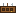
Utilidade
Cinto de Ferramentas
Clique direito: guarde até 9 ferramentas.
- aCouro
- bCouro
- cCouro
- dLinha
- eLingote de Ferro
- fLinha
Utilidade
Carroça
Clique no chão para pôr. Laço na carroça e
- bBaú
- dTábuas (qualquer madeira)
- eBote de Acácia ou Jangada de Bambu ou Bote de Bétula ou Bote de Cerejeira ou Bote de Carvalho Escuro ou Bote da Selva ou Bote de Mangue ou Bote de Carvalho ou Bote de Carvalho Pálido ou Bote de Álamo ou Bote de Abeto
- fTábuas (qualquer madeira)
- gGraveto
- iGraveto
Flechas e frascos
Flecha de Fogo ×4
Incendeia o alvo.
Sem forma: em qualquer lugar da grade
- 4× Flecha
- Pó de Blaze
Flechas e frascos
Flecha de Gelo ×4
Congela e deixa o alvo bem lento.
Sem forma: em qualquer lugar da grade
- 4× Flecha
- Gelo Compactado
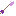
Flechas e frascos
Flecha Rastreadora ×4
Persegue o monstro mais perto.
Sem forma: em qualquer lugar da grade
- 4× Flecha
- Pérola de Ender
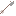
Flechas e frascos
Flecha de Corda ×2
Onde ela cravar, você é puxado até lá.
Sem forma: em qualquer lugar da grade
- 2× Flecha
- Laço
Flechas e frascos
Flecha Explosiva ×4
Explode ao acertar (não quebra blocos).
Sem forma: em qualquer lugar da grade
- 4× Flecha
- TNT
Flechas e frascos
Frasco de Fumaça ×2
Os monstros em volta perdem você de vista e ficam cegos.
Sem forma: em qualquer lugar da grade
- Frasco de Vidro
- Pólvora
- Musgo Lunar
Flechas e frascos
Frasco de Cola ×2
Prende quem estiver perto (lentidão forte).
Sem forma: em qualquer lugar da grade
- Frasco de Vidro
- 2× Bola de Slime
Flechas e frascos
Fogo-Grego ×2
Incendeia tudo em volta (não queima blocos).
Sem forma: em qualquer lugar da grade
- Frasco de Vidro
- Pólvora
- Erva-de-Sol
Flechas e frascos
Frasco de Cura ×2
Cura você e quem estiver perto.
Sem forma: em qualquer lugar da grade
- Frasco de Vidro
- Fatia de Melancia Reluzente
- Sálvia
Mineração
Lingote de Mitrilo
Aprimora netherite na mesa de ferraria.
Fornalha (ou alto-forno, mais rápido)
- Mitrilo Bruto → Lingote de Mitrilo
Mineração
Peça ✦ Mitrilo
Uma peça de Netherite (forjada ou não) vira ✦ Mitrilo: 50% mais durabilidade e um bônus extra.
Mesa de ferraria
- Molde de Ferraria
- Machado de Netherita ou Botas de Netherita ou Peitoral de Netherita ou Capacete de Netherita ou Enxada de Netherita ou Armadura de Netherita para Cavalo ou Calças de Netherita ou Armadura de Netherita para Náutilo ou Picareta de Netherita ou Pá de Netherita ou Lança de Netherita ou Espada de Netherita
- Lingote de Mitrilo
Mineração
Cinzel do Lapidador
Clique no Cristal Bruto de um geodo para lapidar.
- cFragmento de Ametista
- eLingote de Ferro
- gGraveto
Mineração
Bateia
Em pé na água rasa, clique para garimpar.
- aPepita de Ferro
- cPepita de Ferro
- eTigela
Campo e animais
Livro do Criador
Clique num cavalo, burro, mula, lhama ou camelo:
Sem forma: em qualquer lugar da grade
- Livro
- Cenoura Dourada
- Couro
Campo e animais
Ferradura
Clique num companheiro seu (cavalo, burro,
- aLingote de Ferro
- cLingote de Ferro
- dLingote de Ferro
- fLingote de Ferro
- hLingote de Ferro
Campo e animais
Adubo Rico ×4
Clique numa plantação: a próxima
Sem forma: em qualquer lugar da grade
- 3× Farinha de Osso
- Carne Podre
- Terra
Magia
Cajado Arcano (sem forja)
Faça numa Forja do Ferreiro para
- cFragmento de Ametista
- eVara de Blaze
- gVara de Blaze
✨Todas as estações (rituais)
Coloque o bloco, jogue os itens em cima dele com Q (você tem 30 segundos) e pronto. Não dá para criar estação no território dos outros.
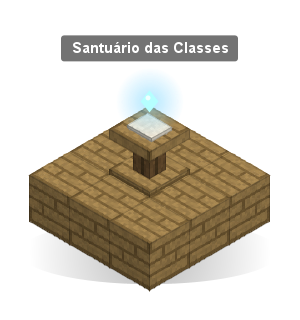
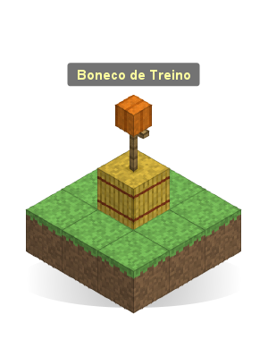
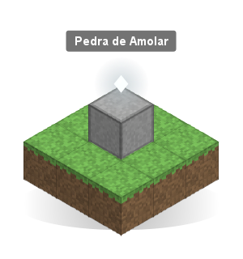
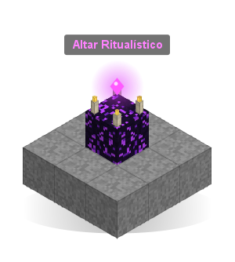
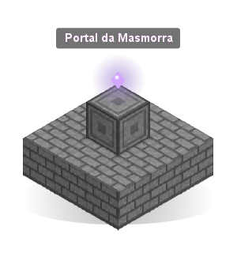
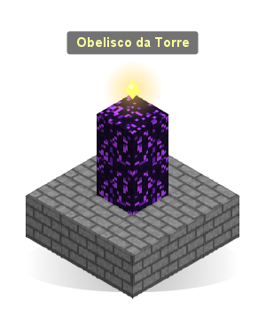
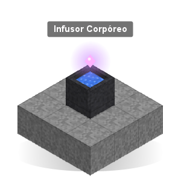
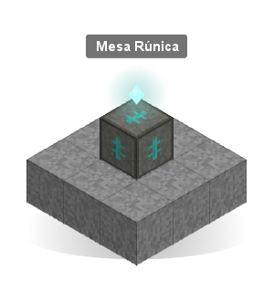
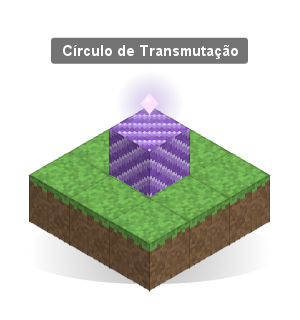
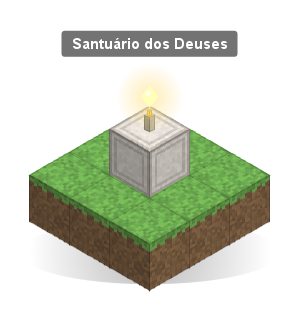
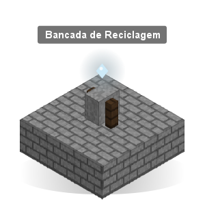
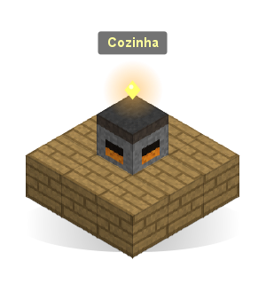
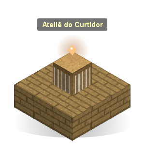
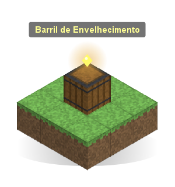
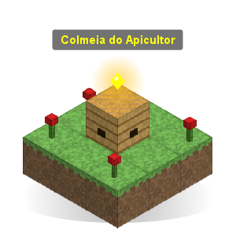
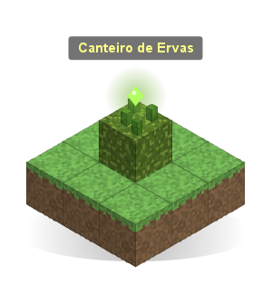
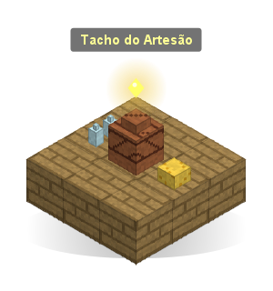
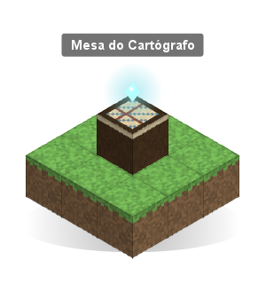
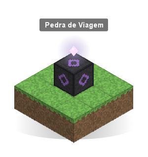
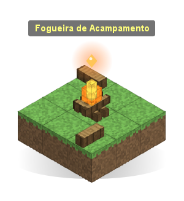
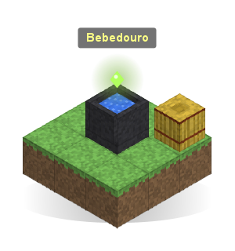
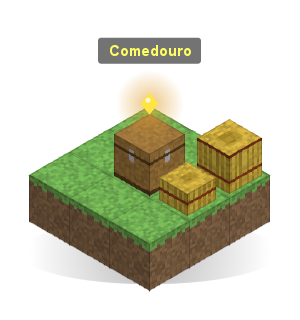
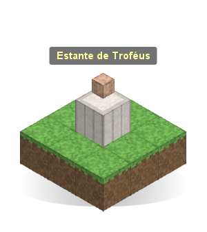
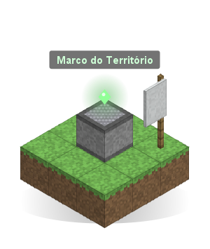
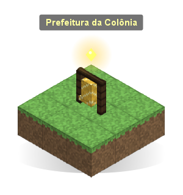
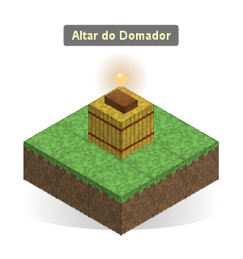
| Estação | Bloco | Itens jogados em cima | Para que serve |
|---|---|---|---|
| Forja do Ferreiro | Bigorna | 2 blocos de ferro + 1 balde de lava | Itens forjados com raridade, refino e Cajado Arcano |
| Infusor Corpóreo | Caldeirão com água | 1 mesa de encantamento + 1 bigorna | Infundir itens no corpo e pegar o grimório |
| Altar Ritualístico | Obsidiana chorona | 1 olho do ender + 4 velas | Invocar chefes e eventos |
| Cozinha | Defumador | 1 caldeirão + 1 balde de água | Pratos com buffs |
| Bancada de Reciclagem | Rebolo | 1 funil + 1 tesoura | Desmontar itens e recuperar material |
| Marco do Território | Magnetita | 1 estandarte + 4 esmeraldas | Proteger a sua área |
| Prefeitura | Sino (no seu território) | 1 bloco de esmeralda + 1 cama | Começar a sua colônia |
| Altar do Domador | Fardo de feno | 1 laço + 1 sela | Companheiros e componentes |
| Portal da Masmorra | Tijolos de pedra entalhados | 1 olho do ender + 1 bússola | Abrir masmorras e o Cofre das Almas |
| Santuário das Classes | Púlpito | 1 livro e pena + 1 diamante | Classes, provas e troca de classe |
| Pedra de Viagem | Pedra entalhada de ardósia | 2 pérolas do ender + 4 fragmentos de ametista | Teleporte entre pedras |
| Bancada Alquímica | Suporte de poções | 2 garrafas de vidro + 1 pó de blaze | Elixires, componentes, gemas, acessórios |
| Obelisco da Torre | Obsidiana chorona | 1 olho do ender + 1 bloco de ouro | Entrar na Torre Infinita |
| Santuário dos Deuses | Quartzo entalhado | 1 maçã dourada + 1 vela | Seguir um deus, oferendas, milagres |
| Círculo de Transmutação | Bloco de ametista | 1 Mercúrio Vivo + 1 lingote de ouro | Transformar materiais |
| Mesa Rúnica | Tufo entalhado | 4 fragmentos de ametista + 1 bloco de lápis | Gravar runas |
O Altar e o Obelisco usam a mesma obsidiana chorona: o que você jogar decide qual dos dois ela vira (e um bloco nunca vira os dois).
⚒Forja, refino e reciclagem
Forja do Ferreiro
- Clique direito: bancada do ferreiro. Armas, ferramentas, armaduras, arcos, bestas, maças, lanças e escudos saem forjados.
- Agachado + clique: tela de refino.
- Na bancada comum os itens saem normais.
- /forja mostra suas chances de raridade.
Raridades
| Raridade | Bônus | Efeitos | Força | Ferraria 0 → 100 |
|---|---|---|---|---|
| ★ Comum | 1 | 0 | ×1,0 | 70% → 25% |
| ★★ Raro | 2 | 0 | ×1,3 | 24% → 35% |
| ★★★ Épico | 3 | 1 | ×1,7 | 5% → 22% |
| ★★★★ Único | 3 | 1 | ×2,1 | 1% → 11% |
| ★★★★★ Lendário | 4 | 2 | ×2,6 | 0% → 5% |
| ★★★★★★ Mítico | 5 | 3 | ×3,3 | 0% → 1,5% |
Bônus: dano, velocidade de ataque, alcance, armadura, vida, velocidade, pulo, mineração, crítico, roubo de vida, esquiva, espinhos... Efeitos (Épico+): passivos, ao acertar, ao apanhar e ao minerar. Raio e Execução são só dos Míticos.
Refino +1 a +10
Cada nível: +6% nos bônus da forja e +4% no dano/armadura base.
| Nível | Custo | Chance |
|---|---|---|
| +1 a +3 | lingotes de ferro e ouro | 100% → 95% |
| +4 a +6 | diamantes (+6 pede 1 Fragmento) | 85% → 65% |
| +7 a +9 | netherite e Fragmentos de Forja | 50% → 30% |
| +10 | 4 netherite, 8 Fragmentos, 1 Essência Primordial | 20% |
Até +5, falhar só gasta material. De +6 a +8 o item perde 1 nível. No +9 e +10 pode perder nível ou quebrar. A Pedra de Proteção evita as duas coisas.
Conjuntos e netherite
- As 4 peças de armadura forjadas dão bônus de conjunto (pela raridade mais baixa): de +1 de armadura (Comum) até +5 de armadura, +4 corações, +10% de velocidade, Regeneração e Resistência (Mítico).
- Subir um forjado para netherite mantém a raridade.
- Item achado no mundo vira forjado se for melhorado numa mesa de ferraria a até 6 blocos de uma Forja.
Bancada de Reciclagem
- Até 9 itens de uma vez: clique nos itens do inventário para pô-los na bancada e em "Reciclar tudo".
- Devolve 50% do material (até 75% com Ferraria alta). O material principal vem primeiro: a sobra vira chance, e item pouco gasto devolve ao menos 1 (a pá de ferro devolve 1 ferro). Netherite volta como diamante + sucata.
- Armas dos minérios devolvem o mineral do plugin (Cristal de Magma, Mitrilo, Âmbar...).
- Encantados: XP de volta e 25–50% de chance de livro com um dos encantos.
- Item valioso (forjado Épico+, com nome ou gema) pede confirmação.
- Lendário/Mítico de diamante ou netherite: chance de Fragmento de Forja. Refino +5 ou mais devolve 1 Fragmento garantido.
- Gemas engastadas voltam inteiras.
Armas com nome
Às vezes a peça já nasce com nome, história e visual próprios: quanto mais rara, maior a chance (2% nas Comuns até 45% nas Míticas). Também aparecem em baús de estruturas e com os chefes. É só aparência: a força é a da raridade.
No inventário aparece o desenho dela; na mão, no chão, no suporte e na moldura vira 3D (espadas, machados, maças, ferramentas, lanças e tridentes).
| Tipo | Armas |
|---|---|
| Espadas | Presa do Inverno, Lâmina de Thalassa, Aurora de Aerília, Juramento do Fortim, Brasa dos Anões, Sussurro da Penumbra, Lâmina da Raiz de Luz, Fio do Guardião dos Ventos, Promessa do Primeiro Colono, Lâmina do Eclipse |
| Machados e maças | Talha-Raízes, Fúria do Saqueador, Machado do Faroleiro, Machado do Velho Lenhador, Mordida da Geada, Sino de Maris, Martelo do Eremita, Martelo do Mestre de Obras, Coração Roubado |
| Arcos e bestas | Arco do Caçador Silencioso, Asa de Zéfira, Arco das Brasas, Arco das Folhas Caídas, Besta do Capitão, Besta Glacial, Besta da Torre de Vigia |
| Ferramentas | Picareta do Mineiro Perdido, Quebra-Cristais, Picareta das Profundezas, Picareta do Poço Fundo, Pá do Coveiro, Pá do Arqueólogo, Enxada da Colheita Dourada, Enxada das Quatro Estações, Enxada do Jardim Suspenso, Vara do Pescador do Gelo, Vara de Coral |
| Lanças e tridentes | Lança da Sentinela, Chifre do Qilin, Agulha dos Ventos, Pique do Cavaleiro Errante, Lâmina do Crescente Verde, Espeto do Bastião, Tridente de Maris, Garfo do Afogado-Rei, Tridente do Pescador de Pérolas, Tridente da Tempestade |
| Arsenal | Presas Gêmeas e Beijo da Víbora (adagas), Pena do Corvo (faca), Machadinha do Velho Anão, Foice do Ceifador de Trigo e Lua Minguante (foices), Bastão do Monge da Montanha e Bordão do Peregrino (bastões), Chicote do Domador de Feras e Língua de Brasa (chicotes) |
| Armas dos minérios | Coração da Montanha e Lâmina do Rei Gigante (montante), Retorno do Escorpião (bumerangue), Asas de Jade (leques), Presa do Kraken e Arpão do Velho Baleeiro (arpão), Estrela da Geada (mangual), Presas do Lobisomem (garras), Tocha do Pântano (clava) |
Trajes (armaduras com nome)
A armadura também pode nascer com nome, com as mesmas chances, e aparece em baús e com chefes. São 8 Trajes de 4 peças, cada um com história, ícone e visual próprio no corpo. Só aparência; funcionam com o Guarda-roupa e continuam ao virar Netherite.
| Estilo | Trajes | Peças |
|---|---|---|
| Placas | dos Ventos, do Fortim, dos Anões, da Geada | Elmo, Peitoral, Grevas, Botas |
| Escamas | da Penumbra, de Thalassa | Elmo, Cota, Grevas, Botas |
| Tecido | da Colheita, da Raiz de Luz | Capuz, Gibão, Calças, Botas |
⚗Alquimia, gemas e acessórios
Bancada Alquímica
- Abas: Elixires, Componentes, Gemas, Acessórios, Engastar e Pergaminhos. Shift + clique cria até 8.
- Componentes: Pó Arcano, Óleo de Peixe, Tintura Vital, Sal Lunar, Mercúrio Vivo, Cristal de Mana, Solvente Alquímico. Pérola Negra e Escama do Abismo vêm da pesca.
- Elixires: Cura, Rapidez, Minerador, Mergulhador, Sorte, Pedra, Sombras, Mana, Gigante, Fênix, Titã e Purificação (cura maldições).
- /alquimia mostra todas as receitas.
Gemas
6 gemas em 3 graus (Bruta, Lapidada, Perfeita; 3 de um grau + material = 1 do próximo). Engaste em itens forjados: Comum 0 espaços, Raro/Épico 1, Único/Lendário 2, Mítico 3.
| Gema | Arma | Arco | Armadura | Ferramenta |
|---|---|---|---|---|
| Rubi | Dano | Dano de flecha | Vida | Vel. mineração |
| Safira | Crítico | Crítico | Armadura | Eficiência |
| Esmeralda | Roubo de vida | Roubo de vida | Esquiva | Sorte |
| Topázio | Vel. de ataque | Durabilidade | Velocidade | Durabilidade |
| Ametista | Alcance | Dano de flecha | Resistência | Alcance |
| Ônix | Repulsão | Durabilidade | Reflete dano | — |
Tirar uma gema gasta 1 Solvente Alquímico e devolve a gema.
Acessórios (/acessorios)
2 anéis, 1 amuleto, 1 cinto e 2 bolsos. Não ocupam a armadura e não caem ao morrer.
| Tipo | Opções |
|---|---|
| Anéis | Vigor, Força, Vento, Marés, Brasas, Minerador, Fortuna, Sábio |
| Amuletos | Mana, Guardião, Vida, Fênix (escapa da morte a cada 10 min), Ventos (queda segura e velocidade) |
| Cintos | Atleta, Andarilho, Titã |
| Bolso | Lanterna de Bolso, Ímã, Relógio, Capa Planadora, Balão de Cristal |
✦Arcano e magias
Infusor Corpóreo
Escolha um item e uma parte do corpo: o item é consumido, gasta XP e pode falhar.
| Parte | Bônus por ponto | Arcano |
|---|---|---|
| Mente | +8 de mana máxima | 0 |
| Coração | +½ ❤ | 0 |
| Braços | +0,25 de dano | 20 |
| Pernas | +1,5% de velocidade | 40 |
| Sangue | +0,4 de mana/s | 70 |
Passar da carga do corpo causa rejeição. Ao morrer, as infusões ficam instáveis por 5 minutos.
Infusões lendárias (núcleos dos chefes)
| Núcleo | Poder |
|---|---|
| Núcleo de Ferro Ancestral | +4 armadura e resistência a empurrões |
| Presa da Rainha Aracnídea | Imune a veneno; envenena quem te ataca |
| Brasa Eterna | Imune a fogo; incendeia quem te ataca |
| Filactério do Lich | Imune a definhamento; rouba 8% do dano |
| Olho da Tempestade | Pulo duplo |
| Coroa do Arauto | +15% de dano e +4 corações |
Criar magias
Pegue o grimório no infusor (1 livro). Uma magia = 1 a 4 essências do seu corpo + uma forma + até 2 modificadores. Toda combinação funciona.
10 essências: Fogo, Gelo, Vento, Água, Vida, Terra, Sombra, Vazio, Energia, Natureza.
Formas: Toque, Projétil, Aura, Corpo, Criação, Raio (segure o clique), Sopro (cone), Chuva (área do céu), Invocação (um elemental luta por você) e Encantar arma.
Modificadores: Rápida, Ampliar, Dividir, Teleguiado, Canalizar, Ricochete, Persistente, Mina, Eco e Potente.
Reações elementais
Quem leva um elemento fica marcado por 6 s; um segundo elemento causa uma reação. Funciona entre jogadores: combos de party são muito fortes.
| Reação | Elementos | Efeito |
|---|---|---|
| Eletrocutado | Água + Energia | Choque salta para até 4 inimigos |
| Congelado | Água + Gelo | Alvo quase parado |
| Derreter | Fogo + Gelo | Muito dano |
| Incêndio | Fogo + Vento | O fogo se espalha |
| Queimada | Fogo + Natureza | Chamas que pulam para outros |
| Lama | Terra + Água | Lentidão forte |
| Corrupção | Sombra + Vida | Dano, definhamento e você se cura |
| Tempestade | Vento + Energia | Um raio cai no alvo |
| Colapso | Vazio + Sombra | Puxa os inimigos para o alvo |
| Estilhaçar | Gelo + Terra | Quebra o gelo: muito dano |
Maestria, estilo e cajado
- Maestria de cada elemento (1–10): +3% de força por nível; no 5 ganha uma variante (Chama Azul, Gelo Eterno...), no 10 as reações ficam 50% mais fortes.
- Estilo: marca visual nas suas magias (Estelar, Almas, Cristal, Cerejeira, Brasas, Eco, Melodia).
- Cajado Arcano: na Forja, 1 ametista na ponta + 2 varas de blaze na diagonal. Tem raridade, aceita refino e lança magias como o grimório. Gemas engastadas fortalecem elementos.
- Pergaminhos: escreva uma magia num papel na Bancada Alquímica; qualquer um lança uma vez, sem mana.
50 magias secretas
Combinações específicas viram magias com efeito único (Bola de Fogo, Nevasca, Meteoro, Fênix, Buraco Negro, Sopro do Dragão...). O grimório dá uma dica de cada.
As 5 proibidas (Chuva de Meteoros, Zero Absoluto, Julgamento, Ruptura Dimensional, Renascer da Floresta) só vêm de Tomos Proibidos: chefes do Altar, selos dos Locais Ocultos e masmorras Difícil/Pesadelo.
✂Curtume, tecelagem e sonhos
Ateliê do Curtidor
- Curtir: pele crua + farinha de osso = couro curtido (2 membranas de phantom = Couro Noturno).
- Tecer: 4 linhas = Tecido · 3 lãs = Feltro · 4 algas secas = Tecido de Alga.
- Costurar: Capuz 3+1, Gibão 5+2, Calças 4+2, Botas 2+1 (couros + tecidos).
- Peles: lobos, ursos polares, raposas, guardiões e hoglins (elites sempre deixam).
- Agachado + clique: o tear normal.
Conjuntos de armadura leve
| Conjunto | 2 peças | 4 peças |
|---|---|---|
| Caçador (lobo + linha) | +5% de velocidade | +10% com flechas e tridente; na Ágil, +8% de dano e esquiva mais barata |
| Urso Polar (urso + feltro) | +1 ❤ | -10% de dano recebido, resiste a empurrões |
| Raposa (raposa + linha) | Sorte | De noite: visão noturna e velocidade |
| Maré (escamas + alga) | Respira debaixo d'água | Graça do golfinho e +5% de peixe raro |
| Noite (noturno + linha) | -50% de dano de queda | Caindo do alto, desce devagar |
| Brasa (brasa + feltro) | -30% de dano de fogo | Sem calor; com pouca vida, Força |
Cada peça tem +1 de armadura e protege do frio. Jogue a peça + 1 Fragmento de Forja na Forja: ela ganha raridade e continua no conjunto.
Sonhos
Durma a noite inteira: às vezes você sonha com um lugar que ainda não conhece (estrutura, naufrágio, cidade submersa ou Local Oculto) e acorda sabendo para que lado fica.
Um sonho por dia, nunca o mesmo lugar. Ficam no /diario.
☘Fazenda e cozinha
Plantações
- Colheita com qualidade: Normal, Boa ★, Ótima ★★, Perfeita ★★★.
- Colheita dupla, toque verde (plantas perto crescem) e colheita gigante (×8).
- Adubo Rico (3 farinhas de osso + 1 carne podre + 1 terra = 4): a próxima colheita sai uma qualidade acima.
- Espantalho: suporte de armadura com abóbora na cabeça impede pisotear a terra a até 10 blocos.
Sementes raras
Duas plantações diferentes maduras lado a lado: 3% de nascer uma semente mutante.
| Cruzamento | Variedade |
|---|---|
| Trigo + Cenoura | Trigo Dourado |
| Cenoura + Batata | Cenoura Cristalina |
| Batata + Beterraba | Batata Ancestral |
| Beterraba + Trigo | Beterraba Rubi |
Cozinha
Clique para o menu de receitas; agachado abre o defumador normal. /receitas mostra o livro. Ingredientes de qualidade sobem a qualidade do prato (e a duração).
| Prato | Culinária | Efeito |
|---|---|---|
| Pão Caseiro | 0 | Pressa |
| Ensopado de Legumes | 0 | Regeneração |
| Sopa do Pescador | 10 | Respiração aquática e Sorte |
| Torta de Abóbora da Vovó | 10 | Sorte e Velocidade |
| Salmão com Ervas | 15 | Respiração aquática e Graça do golfinho |
| Batata Recheada | 20 | Absorção e Resistência |
| Biscoito de Mel | 25 | Pressa II |
| Ensopado do Caçador | 30 | Força |
| Salada Arcana | 40 | Visão noturna e +60 de mana |
| Sushi Real | 45 | Golfinho, Conduíte e Pressa (Salmão-Rei) |
| Banquete do Guerreiro | 50 | Força, Resistência, Regeneração (Trigo Dourado) |
| Pão Dourado | 60 | Absorção II e saciedade cheia |
| Sopa Cristalina | 70 | Resistência ao fogo e Velocidade II |
| Caldeirada Abissal | 75 | Resistência, Visão noturna e Força |
| Torta Rubi | 80 | Vida extra II e Regeneração II |
| Banquete Lendário | 90 | Força, Resistência, Regeneração e Velocidade para todos a 10 blocos |
| Caldo Quente do Pescador | 15 | Resistência ao fogo (protege do frio) e Regeneração (Truta-do-Gelo) |
| Sorvete de Cristal | 50 | Velocidade II e Pressa II (Enguia de Cristal) |
| Caviar Ancestral | 80 | Força, Resistência, Vida extra II e Sorte (Esturjão Ancestral) |
Pratos de monstro
O que os monstros deixam também vai para a panela, com efeitos estranhos e úteis:
| Prato | Culinária | Ingredientes | Efeito |
|---|---|---|---|
| Ensopado do Necromante | 10 | 4 carnes podres, batata, cogumelo, tigela | Fome e veneno não pegam por 5 min |
| Omelete de Olho de Aranha | 15 | 2 olhos de aranha, 2 ovos | Sobe paredes por 45 s |
| Gelatina de Slime | 20 | 3 bolas de slime, açúcar, tigela | Pulo II e sem dano de queda |
| Caldo de Ossos | 25 | 4 ossos, cenoura, tigela | Resistência e quase não é empurrado |
| Crocante de Phantom | 30 | 2 membranas, mel, trigo | Queda lenta; os phantoms esquecem você |
| Caldo do Guardião | 40 | prismarinho, bacalhau, tigela | Poder do conduíte |
| Espetinho de Blaze | 45 | pó de blaze, creme de magma, bife | Resistência ao fogo; golpes põem fogo |
| Sashimi de Brisa | 50 | vara de brisa, salmão, alga | Pulo III e queda lenta |
| Pudim do Fim | 55 | pérola do ender, fruta do coro, ovo, açúcar | Às vezes some e reaparece atrás de quem te bateu |
| Lágrima de Ghast Caramelizada | 60 | lágrima de ghast, 2 açúcares, bagas | Regeneração II e Absorção |
🐄Vida no campo
Criação de animais
- Agachado + clique com a mão vazia num animal da fazenda: ele vira seu e mostra os corações. /animais lista todos.
- Todo dia: carinho (mão vazia) e comida (na mão, pasto na grama, um fardo de feno perto ou o Comedouro).
- Comedouro: 1 fardo de feno + 1 tigela jogados em cima de um baú. Guarde a comida dentro (funil também enche): na virada do dia, os animais a até 12 blocos que não comeram comem daqui. Fardo de feno vira 9 trigos. Agachado + clique mostra para quantos dias dá.
- Mais corações = produtos melhores: ovos, leite (balde), lã, trufas do porco, pele de coelho.
- No inverno, deixe num celeiro com teto. Filhotes nascem já seus (gêmeos na primavera).
Tacho do Artesão
- Clique com o ingrediente na mão: leite → queijo, fruta → geleia, legume → conserva, ovo → maionese, trufa → óleo.
- Guarda a qualidade do ingrediente. Clique de novo quando estiver pronto.
Plantações da estação
- 20 plantas, 5 por estação; o milho cresce no verão e no outono e a cebola no inverno e na primavera.
- Estufa: com teto de vidro, cresce o ano todo. Fora de época, a planta murcha na troca de estação.
- Couve-flor, melão e abóbora-moranga em 3×3 maduras podem virar uma gigante.
- 13 pratos novos com tudo isso (pizza da roça, ratatouille, risoto de trufa, Banquete da Fazenda...).
🛢Vida no mundo
Ofícios
| Estação | Ritual (Q) | O que faz |
|---|---|---|
| 🛢 Barril de Envelhecimento | Barril vazio + 2 ferros + 1 favo | Bebidas que melhoram com os dias reais: Nova, Envelhecida (1 dia), Reserva (3) e Lendária (7). Licor de Frutas: 6 frutas do pomar + 1 garrafa de mel |
| 🐝 Colmeia do Apicultor | Colmeia + 1 favo + 1 flor | Méis Dourado, Gelado, Floral, Noturno ou Silvestre, cada um com um efeito |
| ☘ Canteiro de Ervas | Musgo + farinha de osso + vaso | Ervas que dependem do lugar (Sálvia, Erva-de-Sol, Musgo Lunar, Folha Gélida, Raiz Abissal, Flor-de-Cristal) |
| 🍊 Pomar | Plante uma muda especial | Laranja, pêssego, cereja, limão e maçã dourada penduram nas folhas na estação certa: clique para colher |
Álbum de Cartas
Monstros, chefes e peixes raros às vezes deixam uma carta (algumas são brilhantes). Clique com ela na mão para guardar. São 86 cartas em 11 páginas, e cada página completa dá um bônus para sempre. /album
- Páginas novas: Lendas (chocando ou conquistando uma lendária, e espantando o Nian; +3% de dano em tudo), Mundo (chefes das estruturas e o Coração da Penumbra; +5% de dano em Elites) e Moradores (capítulo 5 do Laço com cada morador; +5% de XP).
- Pacote de Cartas: 3 cartas. Vende no Peregrino e no Taverneiro (8 esmeraldas), cai de Elites e sai dos duelos e dos marcos.
- Pó de Carta: Moer repetidas transforma da 3ª cópia em diante em pó (ficam 2 de cada, para o baralho). Criar carta usa o pó para a carta que falta ou para a 2ª cópia.
- Marcos: 10, 25, 50 e 80 cartas diferentes dão pacotes, esmeraldas, pó e uma brilhante.
- Na parede: numa moldura de item, a carta mostra o desenho do bicho.
🃏 Duelo de Cartas
Cada carta tem custo ⚡, força ⚔, vida ❤ e às vezes um dom (as brilhantes têm +1/+1). A mesa tem 3 trilhas e cada lado começa com 20 de vida. A energia cresce 1 por turno (até 6). Na sua vez: escolha uma carta da mão (embaixo), clique numa trilha sua vazia e, quando terminar, clique em Passar o turno. Aí cada carta sua ataca a da frente; trilha vazia na frente = golpe direto no adversário. Carta nova só ataca no turno seguinte.
| Dom | Efeito |
|---|---|
| Voo | Só quem voa bloqueia; senão, ataca direto |
| Veneno | Quem leva dano perde 1 de vida por turno (2 turnos) |
| Escudo | Ignora o primeiro dano |
| Roubo de vida | Cura você no tanto de dano que causar |
| Explosão | Ao cair, 2 de dano na carta da frente |
| Rápida | Ataca no turno em que entra |
| Invocar | Cria um Lacaio 1/1 numa trilha livre |
| Teimosa | Na primeira vez que cai, volta com 1 de vida |
| Cura | No fim do seu turno, cura 1 de cada carta sua |
| Fúria | +1 de força cada vez que leva dano |
| Muralha | Não ataca, mas segura a trilha |
- Baralho: /album → Baralho: 12 cartas do seu álbum, até 2 de cada. Faltando, o jogo completa com cartas de treino.
- Moradores: todo morador das vilas tem o botão Duelo de Cartas, com baralho próprio e dificuldade (Mestre, Taverneiro e Ferreiro Anão são os difíceis). Vencer dá esmeraldas e às vezes um Pacote; a primeira vitória do dia contra cada um dá um Pacote garantido.
- Jogadores: /duelo <jogador> desafia, /duelo aceitar aceita, /duelo abrir volta para a mesa, /duelo desistir entrega. 90 s por turno. Ninguém perde cartas.
- Títulos: Duelista, Campeão das Vilas, Rival de Mesa, Abridor de Pacotes e Curador do Álbum.
🌿 Vanilla+
- Mudas criam raiz: muda esquecida no chão por uns 40 s se planta sozinha (fora de territórios).
- Folhas soltam gravetos quando caem sozinhas; a de carvalho dá maçã um pouco mais.
- Cabeças: zumbi, esqueleto, creeper e piglin às vezes deixam a cabeça (Pilhagem ajuda).
- Placa no baú: pregue uma placa num baú ou barril; olhando para ele, a barra mostra o que tem dentro.
- Peixes pulando: pesque onde o peixe pulou e às vezes vem um a mais.
- Gelo fino: parado no gelo sobre a água, ele racha e quebra. Agache para aguentar.
- Abelhas polinizam (2.56): colmeia ou ninho com abelhas a até 8 blocos faz a plantação crescer mais rápido.
- Estante viva (2.58): olhando um livro na estante entalhada, a barra mostra o título; agachado + clique abre para ler sem tirar.
- Novos (2.49): ovelhas de cores misturadas, animais seguem a comida de mais longe, suporte de armadura com braços (todos, até os antigos; agachado + graveto liga e desliga), escadas mais rápidas, lanternas que rangem na chuva e raio que queima árvore e deixa carvão vegetal.
🧗 Artefatos de utilidade
| Artefato | Receita | Uso |
|---|---|---|
| Garras de Escalada | 2 pederneiras, 2 ferros, 1 couro | De frente para a parede, segure pular: sobe. Agachado no ar: fica pendurado. Gasta Vigor. |
| Corda de Rapel | 8 linhas + gancho | Na beira de um barranco, clique: desce devagar (agachado segura, pular sobe). 30 descidas. |
| Pêndulo do Rabdomante | linha, pepita de ouro, ametista | Na mão: frio, morno, quente ou fervendo para estruturas não descobertas e minerais raros. |
| Cantil | linha, 4 couros, garrafa | Olhe para a água e clique para encher. Um gole tira o calor por 5 min. |
| Bolsa de Sementes | 2 linhas, 5 couros, semente | Clique na terra arada: planta 3×3. Agachado troca a semente. Gasta Vigor. |
🐴 Linhagens e Estábulo
- Livro do Criador (livro + cenoura dourada + couro): clique num cavalo, burro, mula, lhama ou camelo e veja velocidade, pulo, vida, geração, linhagem e a árvore da família (pais e avós, com setas mostrando se o filhote saiu melhor). No Estábulo, Shift+clique numa montaria guardada mostra a mesma ficha.
- Cruzando: o filhote herda dos pais e às vezes melhora um pouco. Na 5ª geração a família ganha nome de linhagem.
- Estábulo: jogue uma sela e uma porteira (qualquer madeira) em cima de um fardo de feno (com laço no lugar da porteira vira o Altar do Domador). Guarda até 4 montarias (elas voltam iguais) e você chama de volta clicando nele.
Pelo mundo
- Mercador Itinerante: aparece por 20 min com ofertas raras; o servidor avisa onde.
- Encontros: carroça tombada, bandidos com saque, viajante ferido (dê comida) e estrela cadente.
- Segredos: 12 conquistas escondidas. /segredos
Flechas e frascos (bancada)
Flechas: 4 flechas + pó de blaze (fogo), gelo compactado (gelo), pérola do ender (rastreadora) ou TNT (explosiva); 2 flechas + laço (corda: puxa você até onde cravar).
Frascos: garrafa + pólvora + Musgo Lunar (fumaça), 2 slimes (cola), pólvora + Erva-de-Sol (fogo-grego) ou melancia reluzente + Sálvia (cura em área). Clique para arremessar.
Conforto
/rpg abre o menu central (próximo passo, categorias, atalhos e Jornada). Com o pacote de recursos, os menus têm fundo desenhado. /placar liga o placar lateral (nível, vigor, mana, estação, lua, hora e talentos).
♨Detalhes do dia a dia
🛡 Conjuntos dos minerais (2.64)
Espada, picareta, machado, pá, enxada e as 4 peças de armadura de Âmbar, Jade, Pérola, Gelo, Pedra-Sangue, Magma e Quartzo Negro. A receita é a do jogo, com o mineral no lugar do ferro. São mais fortes e duram mais que o ferro, e a armadura aparece no corpo com a cor do mineral.
- Âmbar: sorte; com 4 peças, minério a mais. A picareta às vezes solta um minério a mais.
- Jade: corações a mais; com 4, recupera vida devagar.
- Pérola: respira debaixo d'água; com 4, nada como golfinho e bate mais forte na água ou na chuva.
- Gelo: não congela na neve fofa; com 4, quem bate em você fica lento.
- Pedra-Sangue: rouba vida a cada golpe (com 4, mais, mas a vida máxima cai 1 ❤).
- Magma: menos dano de fogo; com 4, não queima. A picareta funde o minério (sai lingote).
- Quartzo Negro: os piglins não atacam; com 4, Força no escuro.
Conserte na bigorna com o mineral. Na Forja, saem com raridade; na Reciclagem, devolvem o mineral.
🛒 Carroça (2.67)
Receita: baú em cima, um barco no meio entre 2 tábuas e 2 gravetos embaixo. Clique no chão para pôr.
- Atrelar: laço na carroça e depois clique num cavalo, mula, burro, lhama ou camelo domado. Ela vai atrás (o animal fica um pouco mais lento com a carga).
- Usar: clique abre a carga; agachado + clique solta (ou senta, com o Banco); batendo, ela vira item de novo (a carga cai).
- Melhorias (clique nela com o item): bloco de ferro = rodas (mais rápida em estrada), baú = 54 espaços, 3 lãs = toldo (monstros não quebram), lanterna = luz, alavanca = freio, laje de madeira = banco.
🧰 Utilidades do dia a dia (2.65)
- Chave de Construtor (2 ferros, 2 gravetos): gira o bloco clicado; agachado, vira de cabeça para baixo.
- Funil com filtro: ponha uma moldura com um item no funil: ele só aceita aquele item.
- Regador (4 cobres e 1 balde): enche na água e ajuda a plantação a crescer (3x3).
- Lanterna de mão: segurando tocha ou lanterna, o lugar onde você está fica iluminado.
- Bancada de Bolso (bancada e 3 couros): abre a bancada; agachado, outras estações (pedra de amolar, tear, cortador...).
- Balde de Gelo (3 Cristais de Gelo e 1 balde): guarda 4 baldes de água ou de lava.
- Trena (corante amarelo, 3 ferros e linha): clique em dois blocos e veja a medida.
- Cinto de Ferramentas (3 couros, 2 linhas e 1 ferro): guarde as ferramentas; segurando o cinto, bata no bloco e a ferramenta certa vem para a mão.
🌍 O próprio Minecraft, com mais vida (2.61 e 2.62)
- Conquistas: aperte L: há uma aba RPGAtributos com 37 conquistas do servidor.
- Livro de receitas: as receitas do servidor aparecem nele quando você tem um ingrediente.
- Baús das estruturas do jogo (vilas, templos, fortalezas, cidades do End...) às vezes trazem itens do servidor.
- 💬 Conversar no menu dos moradores: perguntas que se abrem conforme o laço cresce.
- Vilas do jogo: aldeões com nome; tocar o sino chama todos para a praça; a cada 3 dias é dia de feira, com trocas 20% mais baratas.
- Ferrovias: em trilho reto o carrinho corre o dobro. Um sino ao lado do trilho toca quando você passa (estação).
- Barco a vela: lã em cruz e 2 gravetos fazem a Vela; clique num barco e reme para a frente. No barco comum, a vela ocupa o 2º lugar.
- O vento (2.66): sopra de um lado e muda 4 vezes por dia. Com vento por trás o barco a vela voa; de lado vai bem; de frente, quase só no remo. Chuva e Ventania deixam o vento mais forte. Veja de onde ele vem no
/calendarioe na barra enquanto veleja. - Barco Grande (2.63): 7 tábuas e 2 barcos (barcos no meio). Leva 5 pessoas: o primeiro pilota, os outros clicam no barco e sentam nos bancos. Com a Vela, o mastro ocupa um banco (4 pessoas). Agachado + clique com a mão vazia recolhe.
- Comboio: laço num barco e, agachado, clique em outro barco: ficam amarrados. O barco a vela puxa os de trás.
- Para-raios: depois de um raio, ele solta faíscas. Clique: fica ligeiro e a próxima peça forjada tem mais chance de sair mais rara.
- Reciclagem automática: funil em cima da Bancada de Reciclagem e baú embaixo dela.
🛋 Conforto (2.57)
- Colher com clique: clique direito na plantação madura (trigo, cenoura, batata, beterraba, verruga): colhe e já replanta. Agachado, não colhe.
- Ordenar: com a mão vazia, clique direito num espaço vazio do baú, barril ou caixa de shulker: tudo se organiza. No seu inventário, arruma a mochila (a barra de atalhos fica).
- Repor a mão: acabou a pilha (bloco ou comida) ou a ferramenta quebrou: outra igual vem para a mão sozinha.
- Portas duplas abrem juntas (e portões lado a lado). Agachado, abre só uma.
- Elevador: 4 lingotes de ferro em cruz e uma pérola do ender no meio (sai 2). Um acima do outro: pule para subir, agache para descer (até 16 blocos).
- Apito do Domador: bambu, pepita de ferro e linha. Clique direito: seus companheiros e animais domados a até 100 blocos vêm andando até você.
- Placa de boas-vindas: /territorio boasvindas <frase>: quem entra no seu território lê a frase.
Mais coisas na Forja
- Barco: isca mais rápida pescando nele e menos dano para quem vai dentro.
- Carrinho de mina: mais rápido nos trilhos.
- Vara de pescar: isca mais rápida e mais peixe raro.
- Élitro: mais impulso dos fogos.
- Armadura de cavalo: velocidade, pulo e vida para a montaria.
- Reforjar: item achado no mundo + 1 Fragmento de Forja jogados na Forja. Vale para o tridente: ele sai forjado e pode nascer com nome.
- Ferradura (5 ferros em U): +15% de velocidade num companheiro, sem gastar componente.
Mundo
- Túmulo: ao morrer, seus itens ficam na sua cabeça onde você caiu, protegidos por 15 min. Uma bússola aponta para ele.
- Sentar: clique com a mão vazia numa escada ou laje, ou /sentar.
- Ninhos: caem das folhas; clique para abrir.
- Animais raros: "de Ouro" e "de Neve" (1 em 500), com drops em dobro.
- Achados na areia e no cascalho; orvalho no amanhecer dá +50% de XP de Agricultura.
Estações pequenas
| Estação | Ritual (Q) | O que faz |
|---|---|---|
| 🎯 Boneco de Treino | Fardo de feno + abóbora esculpida + suporte de armadura | Mostra o dano de cada golpe, o combo usado e o dano por segundo; clique no fardo para comparar as armas (agachado zera); nunca quebra. Só mede: não dá XP de Combate nem de proficiência |
| ⚔ Pedra de Amolar | Rebolo ou pedra lisa + 2 pederneiras + 1 ferro | Arma +10% de dano por 100 golpes (custa 1 pederneira) |
| ♨ Fogueira de Acampamento | Fogueira acesa + 1 lã + 1 tronco | Sentado perto: Regeneração e Descansado (+5% de XP por 20 min); assa comida jogada do lado |
| ☘ Bebedouro | Caldeirão com água + 1 fardo de feno | Filhotes crescem mais rápido; companheiros se curam |
| 🌾 Comedouro | Baú + 1 fardo de feno + 1 tigela | Guarda a comida; os animais da fazenda a até 12 blocos comem daqui na virada do dia |
| 🏆 Estante de Troféus | Pilar de quartzo + núcleo de um chefe | Mostra o troféu; +1% de XP por troféu diferente no seu território |
| 🧭 Mesa do Cartógrafo | Mesa de cartografia + bússola + 3 papéis | Com um mapa do tesouro: direção e distância do X |
Recordes e Diário
/recordes: maior golpe, maior nível e os maiores números do servidor; quem bate um recorde é anunciado. Escreva [recordes] numa placa para ela virar um painel. /diario: o Diário de Viagem com os marcos da sua jornada, cada um com a data.
⚔Combos de arma
Com uma arma na mão, 3 cliques seguidos soltam um golpe. D = clique direito, E = clique esquerdo. Você tem 0,9 s entre um clique e outro.
Como fazer
- Espada, machado, lança, tridente e maça começam com o direito:
D D D,D E D,D D E,D E E. - Arco e besta começam com o esquerdo:
E E E,E D E,E E D,E D D. - Arsenal novo: adaga, duplas, foice, bastão, chicote, montante, leques, mangual, garras e clava começam com o direito; faca, machadinha, bumerangue e arpão, com o esquerdo.
- A barra de ação mostra o progresso (
D · E · ?). - Agachado não solta combo. Clicar em baú ou porta não conta, e um clique só ainda levanta o escudo.
- O clique direito num monstro ou no Boneco de Treino também conta como D (a sequência não quebra ao mirar nele).
- Golpes, habilidades de classe e magias acertam qualquer criatura (menos aldeões, NPCs, animais com nome e os bichos seus e dos aliados) e o Boneco de Treino.
- Jogadores: fora de território vale tudo, mesmo com o PvP do servidor desligado. Dentro de território vale a regra de PvP do dono (e a Lei da Paz do reino). Party (sem fogo amigo) e reino nunca se acertam.
Vigor e proficiência
- Cada golpe gasta vigor (barra amarela no topo) e tem uma recarga curta. O vigor volta sozinho, bem mais rápido fora de luta.
- Cada arma tem proficiência de 1 a 20: sobe acertando e derrotando inimigos com ela. Cada nível dá +2% de dano e libera golpes.
- /combos: escolha qual golpe fica em cada sequência (clique na sequência, depois no golpe).
- Classe, forja, refino, gemas e reações elementais também valem nos golpes.
| Arma | Golpes (nível de proficiência) |
|---|---|
| ⚔ Espada | Estocada (1), Corte Giratório (3), Lâmina Cruzada (5, sangra), Execução (8, x4 em quem está fraco), Tempestade de Lâminas (12), Passo Fantasma (16), Julgamento da Lâmina (20) |
| ✠ Machado | Salto Esmagador (1), Arremesso do Machado (3, volta), Rachar Escudo (5), Fúria do Lenhador (8), Redemoinho de Aço (12), Decapitar (16), Cisão da Terra (20) |
| ↟ Lança | Estocada Longa (1), Varredura (3), Arremesso da Lança (5), Salto do Dragão (8), Muralha de Lanças (12), Perfuração (16), Lança Celeste (20) |
| ♆ Tridente | Onda (1), Puxão (3), Redemoinho (5), Tridente do Trovão (8), Maré Alta (12, ajuda a party), Mergulho (16), Fúria de Poseidon (20) |
| ⚒ Maça | Abalo Sísmico (1), Martelo Ascendente (3), Atordoar (5), Quebra-Armadura (8), Salto Meteoro (12), Eco do Impacto (16), Martelo dos Deuses (20) |
| ➹ Arco e besta | Tiro Triplo (1), Flecha Perfurante (3), Salto Tático (5), Flecha Explosiva (8), Saraivada (12), Flecha Sombria (16, persegue), Tiro Celestial (20) |
Golpes de lenda
Cada uma das 12 lendas tem um golpe só dela, que aparece no /combos e vai em qualquer sequência. Lenda que é arma: na mão. Armadura ou picareta: basta estar com você.
Purificação Sagrada, Teia da Rainha, Queda da Floresta, Colapso do Abismo, Tempestade de Raios, Vazio do Fim, Égide, Passo do Andarilho, Sentença, Bigorna Celeste, Lâmina Arcana Suprema e Chamado da Alcateia.
Golpes de classe
Cada classe avançada tem um golpe para a arma dela (vale também na lendária que nasce dela).
Berserker: Fúria Sangrenta · Cavaleiro: Carga do Cavaleiro · Paladino: Martelo Sagrado · Atirador: Tiro na Cabeça · Caçador: Flechas da Matilha · Elementalista: Prisma Elemental · Feiticeiro: Lâmina Rúnica · Assassino: Mil Cortes · Mestre Forjador: Martelo Incandescente · Mestre das Feras: Investida da Fera.
Finalizador em cadeia
Acerte 3 golpes de combo diferentes em 10 s: o próximo combo (até 8 s depois) sai com +50% de dano e uma explosão em volta.
Posturas (/postura)
| Postura | Efeito |
|---|---|
| ▲ Ofensiva | +15% de dano e desequilibra mais; leva +10% de dano e gasta +10% de vigor |
| ■ Defensiva | -20% de dano recebido, resiste a empurrões e cada golpe cura ½ ❤; -10% de dano |
| ≈ Ágil | +10% de velocidade, recarga -20%, esquiva custa metade; -8% de dano |
| ✦ Mestra | A da arma na proficiência 20: Duelista, Carrasco, Falange, Maré, Colosso ou Atirador Paciente |
Com o pacote, espada, machado e maça mudam o jeito de segurar em cada postura.
Afinidade: sua classe e seu deus combinam com uma postura (veja no menu). Classe: +8% de dano e metade das penalidades. Deus: +1% de dano por nível de fé.
Óleos de lâmina
Feitos na Bancada Alquímica (aba Componentes), todos com 1 Óleo de Peixe. Segure e clique com o direito: o óleo vai na arma da outra mão (ou na 1ª arma da barra) e dura 60 golpes.
| Óleo | Receita (+ Óleo de Peixe) | Efeito |
|---|---|---|
| Fogo | pó de blaze, frasco | incendeia |
| Gélido | gelo compactado, 2 bolas de neve | lentidão e congela |
| Venenoso | 2 olhos de aranha, batata venenosa | veneno |
| Trovejante | Mercúrio Vivo, 2 lingotes de cobre | às vezes uma faísca salta para outro inimigo |
| Prata | 6 pepitas de ferro, pó de glowstone | +40% em mortos-vivos |
Ligações
- Combos × magia: com óleo ou runa na arma, os combos levam o elemento e fazem reações com as magias (suas ou da party). Óleo Gélido + magia de Fogo = Derreter.
- Ataque conjunto: dois da mesma party acertam combos no mesmo inimigo em até 3 s: dano extra, muito equilíbrio e estilo.
- Companheiros: no finalizador, eles atacam o alvo do combo.
Estilo, tempo certo e equilíbrio
- Tempo certo: depois do 2º clique, um "tim" marca o 3º. Acertou: golpe perfeito (+25% de dano, 30% menos vigor).
- Estilo D → S: varie os golpes e não apanhe. Mais rank = mais dano e XP.
- Equilíbrio: combos enchem a barra dos inimigos fortes; cheia, eles ficam parados 4 s e levam +50%.
- No ar: golpe em quem está no ar dá +30%.
🪶 Raças (2.52 e 2.53)
Use /raca para escolher. O tamanho muda de verdade e cada raça cresce em 5 estágios de Despertar: a Essência vem do XP dos atributos da raça e cada estágio pede uma oferenda. Trocar custa 30 níveis.
| Raça | Tamanho | O que ganha |
|---|---|---|
| Humano | 100% | Mais XP em tudo, Vigor, vida e, no V, a Herança (o dom de outra raça). |
| Anão | 65% | Vida, mineração rápida, visão nas cavernas e minério dobrado. Um pouco mais lento. |
| Elfo | 110% | Velocidade, flechas mais fortes, Sentidos Élficos (agache 2 s) e cura nas florestas. Menos vida. |
| Pequenino | 50% | Sorte, comida que enche mais, passa despercebido agachado e desvia de golpes. Menos vida. |
| Povo-Pássaro | 90% | Sem dano de queda, planar (II), asas que batem (III) e voo segurando o pulo (V). Armadura pesada no peito prende as asas. |
| Povo do Mar | 100% | Fôlego, visão e nado debaixo d'água, respira na água e bate mais forte na chuva. Fraco no Nether e nos desertos. |
| Draconato | 105% | Resiste ao fogo, Sopro de Fogo (II), asas curtas para planar (III), imune a fogo e lava (IV). Fraco no frio. |
| Homem-Fera | 105% | Visão à noite, garras de mãos vazias, Uivo (III), corre e regenera à noite, imune à licantropia (V). Ouro fere mais. |
| Espectral | 100% | Cai devagar, mortos-vivos o ignoram de longe, Desvanecer (III), golpes gélidos e volta da morte 1×/hora (V). Fraco ao sol. |
| Gnomo Inventor | 60% | Conserta a ferramenta da mão, poupa durabilidade, explosivos mais fortes, Autômato de ferro (IV), mais raridade na Forja. Menos vida. |
Com o pacote de recursos as asas são de verdade; sem ele, aparecem desenhadas com partículas.
- Habilidade da raça (2.53): agache duas vezes rápido (Sopro, Uivo, Desvanecer ou Autômato).
- Sinergia: com uma classe que combina com a raça ativa, +6% de dano e -5% de dano recebido (veja no /raca).
- Estágio V: o título da raça (Sangue de Dragão, Alfa da Lua, Grande Inventor...).
- Enfeites de cabeça: orelhas, barba, chifres, barbatanas, óculos e auréola no /raca, de graça. Vista ou use no Guarda-roupa por cima do capacete.
🗡 O arsenal novo (2.51)
Seis armas novas, cada uma com proficiência, 7 golpes e Postura Mestra. São feitas na bancada (madeira, pedra, cobre, ferro, ouro ou diamante; netherite na mesa de ferraria) e forjadas na Forja do Ferreiro como as outras.
| Arma | Receita (M = material) | Jeito |
|---|---|---|
| Adaga | M + graveto na diagonal | Rápida; pelas costas +50%. Uma em cada mão = Lâminas Duplas (a segunda adaga às vezes acerta junto). |
| Faca de Arremesso | M sobre pena | Clique direito arremessa. Recolha no chão (volta sozinha em 1 min). Combos começam com E. |
| Machadinha | MM / graveto e pena | Arremesso pesado. |
| Foice | MMM + 2 gravetos | Corte largo; cada abate cura. |
| Bastão | M + 2 gravetos na diagonal | Mais alcance e empurrão. |
| Chicote | M, couro e graveto | +3 de alcance. |
Posturas Mestras: Sombra (adaga), Tempestade Gêmea (duplas), Olho de Águia (arremesso), Ceifador (foice), Monge (bastão) e Domador de Feras (chicote).
⛏ As armas dos minérios
Sete armas feitas com os minerais do mundo, cada uma com mecânica própria, 7 golpes e Postura Mestra. Uma receita só (com o mineral) e forjadas na Forja do Ferreiro como as outras.
| Arma | Receita | Jeito |
|---|---|---|
| Montante de Mitrilo | 2 Lingotes de Mitrilo em pé; diamante, graveto e diamante embaixo | Pesado e lento; duas mãos: varre quem está em volta do alvo (com algo na outra mão, -40%). |
| Bumerangue de Âmbar | Tábua e Âmbar; tábua embaixo à direita | Clique direito arremessa: vai, volta para a mão e acerta nas duas vezes. |
| Leques de Guerra de Jade | Jade, papel, Jade; graveto embaixo | Rápidos; às vezes uma rajada de vento afasta quem está em volta. |
| Arpão de Pérola | Pérola, ferro e graveto na diagonal | Clique direito arpoa: puxa o alvo até você ou você até o bloco. Mais forte na água. |
| Mangual de Gelo | Cristal de Gelo, corrente e graveto na diagonal | Cada golpe deixa lento; às vezes congela. |
| Garras de Pedra-Sangue | 2 Pedras-Sangue em cima, 3 ferros embaixo | Muito rápidas e roubam vida. |
| Clava Fumegante | Turfa, tronco e graveto em pé | Com Turfa no inventário os golpes queimam. |
| Lança de Basalto (2.56) | Cristal de Magma, basalto polido e vara de blaze na diagonal | Longa; todo golpe põe fogo e quem queima leva +25%. |
Posturas Mestras: Titã (montante), Vento que Volta (bumerangue), Garça de Jade (leques), Baleeiro (arpão), Avalanche (mangual), Fera Sangrenta (garras), Fornalha (clava) e Vulcão (lança de basalto). Bumerangue e Arpão começam os combos com o esquerdo.
Com o pacote de recursos, ficam em 3D na mão. Adaga, faca, machadinha, foice e bastão da bancada têm a lâmina na cor do material.
◆ Incrustar minério
Arma corpo a corpo na mão, um mineral na outra e clique na Forja do Ferreiro (2 níveis de XP). Uma incrustação por arma; uma nova troca a antiga.
| Mineral | Efeito |
|---|---|
| Jade | +1 ❤ de vida máxima |
| Âmbar | +1 de sorte |
| Pérola | +25% de dano na água ou na chuva |
| Cristal de Gelo | Cada acerto deixa lento |
| Pedra-Sangue | Rouba 6% do dano em vida |
| Turfa | 15% de chance de pôr fogo |
✪ Técnicas secretas (2.54)
Cada arma tem uma técnica secreta, um golpe a mais que só um Mestre de Armas ensina. Fale com o mestre na vila e escolha Técnicas: cada uma pede proficiência 12 na arma e 24 esmeraldas. Depois ela aparece no /combos como os outros golpes.
| Mestre | Vila | Técnicas |
|---|---|---|
| Mestra das Marés | Pescadores | Maremoto (tridente), Mil Estocadas (lança), Fisgada do Leviatã (arpão), Mil Lâminas (arremesso), Órbita Eterna (bumerangue) |
| Mestre do Bastão | Mosteiro | Montanha Inabalável (bastão), Vendaval de Pétalas (leques), Serpente-Relâmpago (chicote), Dança das Sombras (adaga), Tempestade Escarlate (duplas) |
| Mestre de Guerra | Anões | Machados Ancestrais (machado), Sino do Juízo (maça), Céu Partido (montante), Nevasca de Ferro (mangual), Erupção Vulcânica (clava) |
| Mestra da Lâmina | Élfica | Vento Cortante (espada), Flecha Cometa (arco), Lua de Sangue (foice), Frenesi da Fera (garras) |
| Ferreiro Piglin | Forja dos Piglins (Nether) | Coração do Vulcão (Lança de Basalto), pago em 24 lingotes de ouro |
🛡 Aparar
Levante o escudo bem na hora do golpe, de frente para o atacante. O golpe some, flechas voltam, o atacante fica lento e fraco, você ganha 10 de Vigor e o próximo golpe em 1,5 s faz ×1,5.
Escudo de Duelo: ferro, ouro, ferro em cima e um escudo no meio. Dá mais tempo para aparar e o contra-ataque vira ×1,8.
🎯 Fraquezas e clima
Cada família de criatura apanha mais de algumas armas (esqueletos de maça e clava, aranhas de lança e foice, criaturas de fogo de tridente e arpão, voadores de arco e bumerangue...). O aviso aparece na barra e a lista fica no Bestiário.
Na chuva o tridente e o arpão ficam mais fortes e o fogo se apaga; no frio o mangual ganha força.
▲ Maestria de postura
Cada acerto conta para a postura que você usa. Ela sobe até o nível V (200, 600, 1.500 e 3.500 acertos) e cada nível soma 2% no que ela faz. Veja o nível no menu de posturas.
≋Mobilidade e mochila
Esquiva
Dois toques rápidos em A, D ou S: salto rápido para o lado ou para trás, com um instante sem levar dano. Gasta 15 de vigor.
Gancho de Escalada
Lance num bloco e recolha: você é puxado até lá, sem dano de queda. Num monstro, ele vem até você; num chefe, você vai até ele.
Capa Planadora
Acessório de bolso (Bancada Alquímica: 4 membranas de phantom, 6 penas, 2 couros). No ar, aperte pular para planar. Pule de novo ou agache para soltar.
Balão de Cristal
A capa barata: abre do mesmo jeito (pule no ar), desce ainda mais devagar, mas anda bem mais devagar e estoura no fim do 5º voo. A descrição mostra os usos que restam.
Mod de apoio (opcional)
Quem usa NeoForge 26.3 pode pôr o rpgapoio no jogo e ganhar teclas próprias em Opções > Controles > RPGAtributos: R golpe da montaria, V habilidade de classe, B trocar habilidade, Alt esquiva, N próxima postura e J menu. Dá para trocar qualquer uma. Sem o mod, os atalhos de sempre continuam valendo.
Mochila
/mochila: baú pessoal com 1 fileira no começo e +1 a cada 150 níveis somados, até 6. Não cai quando você morre.
⚜Classes
Como funciona
- Escolha um caminho (/classe ou no Santuário): as tarefas começam a contar.
- Faça as tarefas (ex.: Guerreiro = 100 monstros corpo a corpo).
- Passe na Prova num Santuário (ondas, alvos ou duelo). Morrer na prova não perde nada.
- A classe sobe do 1 ao 20 com o XP dos atributos dela. No 20 fica Dominada para sempre.
Uma classe ativa por vez. Voltar para uma já aprendida custa 10 esmeraldas. Básicas pedem nível total 55 e o atributo no 15; avançadas pedem o atributo no 40.
| Classe | Pede | Passivo (nível 20) | Habilidades |
|---|---|---|---|
| ⚔ Guerreiro | Combate 15 | +2 ❤, +10% dano corpo a corpo | Investida, Grito de Guerra |
| ➹ Arqueiro | Combate 15 | +15% dano de flecha, +5% velocidade | Chuva de Flechas, Salto Evasivo |
| ✦ Mago | Arcano 15 | +40 mana, +1 mana/s | Míssil Arcano, Barreira Arcana |
| ✧ Ladino | Corrida 15 | +12% velocidade, 8% esquiva | Bomba de Fumaça, Rolamento |
| ⚒ Ferreiro | Ferraria 15 | 5% de forjar uma raridade acima, +3% refino | Reparo Rápido, Armadura Reforçada |
| ♞ Domador | Doma 15 | +1 companheiro, +15% dano deles | Chamado, Fúria da Matilha |
| ☠ Berserker | Guerreiro | +15% dano, até +40% com pouca vida | Fúria, Redemoinho |
| ♜ Cavaleiro | Guerreiro + Domador | +3 ❤, +4 armadura, +25% dano montado | Carga, Baluarte |
| ✚ Paladino | Guerreiro + Mago | +3 ❤, +3 armadura, +30 mana | Luz Sagrada, Escudo Divino |
| ➶ Atirador de Elite | Arqueiro | +30% dano de flecha, 15% de crítico ×2 | Tiro Perfurante, Olho de Águia |
| ☤ Caçador | Arqueiro + Domador | +20% dano de flecha e dos companheiros | Marca do Caçador, Armadilha |
| ❄ Elementalista | Mago | +80 mana, +2 mana/s, magias 20% mais baratas | Tempestade Elemental, Escudo Elemental |
| ✴ Feiticeiro de Batalha | Mago + Guerreiro | +40 mana, +10% dano; golpes devolvem mana | Lâmina Arcana, Passo Arcano |
| ✝ Assassino | Ladino | +15% velocidade, 12% esquiva, +50% dano pelas costas | Passos das Sombras, Golpe Letal |
| ⚒ Mestre Forjador | Ferreiro | 12% de forjar uma raridade acima, +8% refino | Afiar, Martelo do Trovão |
| ♞ Mestre das Feras | Domador | +2 companheiros, +1 componente, +40% dano | Rugido, Vínculo Vital |
✪Classes lendárias
Só pode haver um dono de cada no servidor. Quem fica 30 dias sem entrar perde a classe. O dono pode abrir mão dela no Santuário (shift + clique).
| Classe | Onde desperta | Pede (dominada) | Habilidades |
|---|---|---|---|
| ✪ Herdeiro do Ferreiro Lendário | Túmulo do Ferreiro Antigo | Mestre Forjador | Martelo Celestial, Bênção do Ferreiro |
| ✺ Arquimago Primordial | Biblioteca Proibida | Elementalista | Meteoro Arcano, Tempo Suspenso |
| ❂ Senhor das Feras Ancestrais | Covil das Feras Ancestrais | Mestre das Feras | Chamado Ancestral, Forma Bestial |
| ♛ Senhor da Guerra | Cripta do Rei Caído | Berserker | Terremoto, Estandarte de Guerra |
| ☽ Lâmina Fantasma | Santuário das Sombras | Assassino | Dança das Lâminas, Véu Sombrio |
| ✵ Arqueiro Celestial | Observatório Celeste | Atirador de Elite | Flecha Estelar, Chuva de Estrelas |
| ☀ Santo Paladino | Capela Profanada | Paladino | Julgamento Divino, Aura Sagrada |
| ☾ Soberano das Sombras | Portal Pesadelo com o Eco do Soberano | Qualquer classe avançada | Levante-se, Exército das Sombras |
As 7 primeiras também pedem o atributo da classe no nível 40.
✦Lendas e feitos
Como forjar
/lendas abre o Livro das Lendas. Cada lenda é um item ✦ Especial ✦ único no servidor, com a sua história escrita nele.
- Cumpra os feitos (escondidos: aparecem na metade ou com uma Página do Livro das Lendas).
- Ferraria 50, perto de uma Forja, segurando o item certo.
- Custo: 1 Essência Primordial, 6 Fragmentos de Forja e 30 níveis.
- Despertar com abates: I (0), II (100), III (300), IV (700), V (1.500).
| Lenda | Item | Enigma | Poder |
|---|---|---|---|
| Lâmina do Exorcista | espada/machado | "Os mortos só descansam pelas mãos de quem já os fez descansar mil vezes." | +60% de dano em mortos-vivos |
| Presa da Tecelã | espada/lança | "Quem quebra a teia da rainha mais de uma vez herda o veneno dela." | Envenena; 20% de prender na teia |
| Machado do Lenhador Eterno | machado | "A floresta respeita quem já derrubou uma floresta inteira." | Derruba a árvore inteira |
| Picareta do Abismo | picareta | "O abismo se abre para quem já arrancou milhares de tesouros da pedra." | Agachado, minera o veio inteiro |
| Arco da Tempestade | arco/besta | "A tempestade empresta o raio a quem a venceu e nunca erra de longe." | 25% das flechas chamam raio |
| Coroa do Fim | capacete | "Só quem derrota o fim várias vezes pode se coroar com ele." | +25% de dano em chefes |
| Égide do Guardião | peitoral/escudo | "O escudo nasce de quem sobrevive onde ninguém deveria sobreviver." | Devolve 15% do dano; Absorção |
| Botas do Andarilho | botas | "O caminho reconhece quem já correu o mundo inteiro." | Velocidade, sem dano de queda |
| Lâmina do Carrasco | espada/machado | "A lâmina pesa com o sangue dos que caíram em duelo." | Dano dobrado abaixo de 20% de vida |
| Martelo do Forjador Lendário | maça/machado | "O martelo escolhe quem já fez o metal cantar, e cantar os mitos." | Trovão; +10% de raridade na forja |
| Lâmina do Arquimago | espada | "O aço se curva para quem conhece todos os segredos da magia." | Magias 30% mais baratas |
| Elmo do Senhor das Feras | capacete | "As feras coroam quem lutou ao lado delas até o céu." | Companheiros ganham Força e Regeneração |
👕Guarda-roupa, títulos e missões
Guarda-roupa
/guardaroupa: escolha uma peça para ser a aparência de cada parte, sem perder a proteção da armadura de verdade. Na cabeça vale qualquer item, e dá para esconder peças.
/cosmeticos, /chapeu e /tag: item na cabeça e tag personalizada.
Títulos
/titulos: 103 títulos com requisitos (em páginas), como Duelista, Andarilho das Ruínas, Coletor da Estação e Irmãos de Armas. Só o título em uso dá bônus (vida, dano, mana, XP...). Ele aparece acima da sua cabeça e os mais difíceis são anunciados.
Missões dos aldeões
Agache + clique direito num aldeão com profissão: 3 pedidos do dia. Cumprir dá esmeraldas, XP, às vezes Fragmentos, e reputação (desconto no comércio). Até 3 ao mesmo tempo; /missoes.
★Talentos, renascer e companheiros
Talentos
1 ponto a cada 25 níveis somados nos atributos (até 52), mais 8 a cada renascimento. Cada árvore tem 4 faixas: a 2ª abre com 5 pontos gastos nela, a 3ª com 10 e o talento final com 15. Refazer custa 16 esmeraldas. /talentos
| Árvore | Talentos | Final |
|---|---|---|
| ⚔ Guerreiro | Força Bruta, Pele Grossa, Vigor de Batalha, Sede de Sangue, Golpe Crítico, Inabalável | Fúria Imortal: com pouca vida, +25% de dano e Regeneração II |
| ✦ Arcano | Mente Ampla, Fluxo, Economia Arcana, Eco de Mana, Escudo de Mana, Erudito | Sobrecarga: a cada 30 s, uma magia de graça |
| ⚒ Artesão | Mãos de Ferreiro, Colheita Farta, Refinador, Alquimista Nato, Mestre-Cuca, Engenhoso | Obra-Prima: forja com chance de subir duas raridades |
| ➶ Explorador | Passos Leves, Sorte do Viajante, Queda Suave, Esquiva Ágil, Caçador de Tesouros, Garimpeiro | Andarilho Eterno: fora de combate, Velocidade I e Pressa I |
Renascer
Com todos os atributos no nível 100, os atributos voltam a 0 e os talentos são devolvidos. Para sempre, a cada vez:
- +10% de XP, +1 ❤, +2% de dano corpo a corpo e +10 de mana;
- +8 pontos de talento e uma ★ antes do nome (até 5).
Itens, classes, lendas, companheiros e títulos ficam. Mochila, território, masmorras e classes contam como nível máximo. /renascer
Evolução dos companheiros
- Ganham XP lutando (Elites e chefes valem mais), sendo montados e perto de você. Nível 1 a 30, +2% de vida e dano por nível.
- Nível 10, estágio II: maiores, se regeneram e ganham o Golpe Feroz.
- Nível 25, estágio III: ainda maiores e com o Vínculo Ancestral (perto dele você recebe 8% menos dano).
- Lobo → Lobo Alfa → Lobo das Sombras; Cavalo → Corcel de Guerra → Corcel Celeste; Golem → Colosso de Ferro. Veja no /pets.
Natureza e potencial
Cada companheiro nasce com uma natureza: Valente (+dano, −velocidade), Robusto (+vida, −dano), Ligeiro (+velocidade, −vida), Teimoso (+armadura, −velocidade), Feroz (+dano, −armadura), Calmo, Leal e Curioso (evoluem mais rápido), Medroso (+velocidade, −dano) ou Equilibrado. O potencial (★ a ★★★★★) aparece no estágio II, ou na hora para quem tem o Baize.
🗺Exploração e campanha
Enciclopédia do Mundo
Cada bioma em que você pisa, cada estrutura em que entra e cada item que pega pela primeira vez entram sozinhos na enciclopédia, junto com as relíquias. Cada bioma novo dá +0,2% de XP em tudo (até +15%). /enciclopedia
Mitrilo
- Minério raro no fundo do mundo (Y -58 a -24), no lugar de ardósia profunda e tufo. Brilha de leve.
- Só quebra com picareta de diamante ou netherita, devagar. Dá Mitrilo Bruto e muito XP de Mineração.
- Bruto no forno vira Lingote de Mitrilo.
A peça vira ✦ Mitrilo: 50% mais durabilidade, e arma +1,5 de dano, armadura +1 de armadura e resistência, ferramenta +20% de velocidade.
Mineração e biomas
Cada bioma tem um mineral próprio: Âmbar (deserto e badlands; às vezes com uma relíquia dentro), Jade (selva), Ostras com Pérola (fundo do mar), Cristal de Gelo (montanhas geladas), Pedra-Sangue (Nether) e Turfa (pântano, combustível que queima 2,5 vezes mais que o carvão). Viram anéis e amuletos na Bancada Alquímica, e o Joalheiro das vilas compra.
- Geodos de Cristal nas cavernas: lapide o Cristal Bruto com o Cinzel do Lapidador (ametista, ferro e graveto na diagonal). 4 cliques com calma = uma gema; com pressa, ele racha.
- Bateia (2 pepitas de ferro e uma tigela): em pé na água rasa, clique e espere parado. Pepitas, ouro bruto e, às vezes, gemas, âmbar ou pérolas. Nas badlands rende mais.
- Eco da pedra (Mineração 20%): perto de algo raro, a pedra canta quando você minera. Quanto mais agudo, mais perto.
Mapas do Tesouro
- Mapas de verdade com um X vermelho. Caem de elites, da pesca, de baús de chefes e masmorras, de sítios de arqueologia e do Cronista.
- Três tipos: comum, raro e lendário (este traz mitrilo).
- Chegue a 14 blocos do X com o mapa: o baú é desenterrado e guardiões saem da terra.
Arqueologia e relíquias
Procure pedras em pé com areia e cascalho suspeitos em volta. Use o pincel: saem cacos e uma das 12 relíquias (Moeda do Rei Caído, Máscara de Mortis, Coração de Sombra...). Cada uma tem sua história e entra na coleção.
Estruturas pelo mundo
Em terra nunca visitada surgem, de vez em quando, dezesseis tipos de estruturas prontas. Ao chegar perto, o nome aparece na tela e ela entra no Diário. Descubra 12 para o título Andarilho das Ruínas.
| Estrutura | O que tem |
|---|---|
| 🗼 Torre de Vigia Abandonada | Três andares, sino e baú no alto. Sentinelas Esquecidas acordam quando você chega |
| ⛺ Acampamento de Bandidos | Fogueira, tendas e saque. Bandidos e o Chefe dos Bandidos (esmeraldas e às vezes mapa) |
| ⚰ Cemitério Antigo | Lápides e um mausoléu com cripta embaixo (página de lenda, relíquia). À noite os mortos se levantam |
| ⛏ Mina Abandonada | Poço com escada até túneis com trilhos, minérios e o carrinho de minério (às vezes Mitrilo). Mineiros Perdidos e aranhas |
| ⛲ Poço dos Desejos | Jogue 1 esmeralda na água: um desejo por dia (Sorte, Vigor, Ligeireza, Pressa, Herói da Vila, Fôlego ou Visão) |
| 🛖 Cabana do Eremita | O Eremita troca ervas, mudas, elixires, mapas e cartas (ofertas novas todo dia) e conta boatos de estruturas que você ainda não viu |
| ✧ Santuário Esquecido | Altar de um dos seis deuses. Se você segue esse deus, clique no altar uma vez por dia: +30 devoção e uma bênção |
| 🌴 Oásis do Deserto | Lagoa com palmeiras, um camelo e o Mercador Nômade (gemas, bebidas, elixires, mudas de limoeiro, mapas) |
| 🧙 Cabana da Bruxa | No pântano, sobre palafitas. A Bruxa vende elixires, componentes, frascos e ervas de dia; à noite não atende e as aprendizes dela saem |
| 🗼 Farol Abandonado | Na praia. Suba e clique na lanterna com um bloco de pedra luminosa: por 7 dias quem navega perto tem Sorte (pesca e saque melhores) |
| ❄ Expedição Perdida | Na neve: o diário da expedição e o trenó com o mapa que eles seguiam. Exploradores Congelados guardam o lugar |
| 🏚 Vila Saqueada | Casas queimadas e o diário de um sobrevivente (conta de onde vieram os bandidos). Os Aldeões Perdidos podem ser curados |
| 🔮 Torre do Mago em Ruínas | As anotações do mago revelam uma magia secreta. No alto, o Aprendiz Corrompido guarda o baú |
| ◯ Círculo de Pedras Antigas | De noite as pedras brilham. Na lua cheia, entre no círculo: o Guardião Ancestral desperta e deixa uma relíquia |
| ⚒ Forja dos Anões | Salão meio enterrado com lava e bigorna: Fragmentos de Forja e às vezes Mitrilo. Anões Espectrais lá dentro |
| 🏰 Fortim em Ruínas | Muralha, torres e a torre de menagem. Soldados e o Capitão Esquecido. Bom para party |
| ⚓ Naufrágio | No fundo do mar. Navio com nome (mercante, pirata, real ou de expedição), carga própria e o diário do capitão, que às vezes aponta para uma cidade submersa |
| 🔱 Cidade Submersa | Rara, no mar profundo. Templo de Maris, casas, arquivo com a história, cofre e guardas afogados |
Vilas com moradores
Quatro tipos de vila, cada uma com 4 moradores. Clique num deles: ♥ Laço (5 capítulos de história e um presente único no fim), Loja (ofertas novas todo dia; alguns compram coisas suas) e ✦ Serviço.
| Vila | Onde | Moradores |
|---|---|---|
| 🎣 Vila de Pescadores | Praias e rios | Velho Pescador, Peixeira (compra peixes), Carpinteiro Naval (barcos), Menina do Cais (um pedido por dia) |
| 🔔 Mosteiro da Montanha | Prados, cerejeiras e montanhas | Mestre (treino diário), Monge Herbalista, Guardião do Sino (bênção para a party), Peregrino (uma história por dia) |
| ⛏ Aldeia dos Anões | Montanhas e badlands | Mestre Mineiro, Joalheiro (compra diamantes), Ferreiro Anão (conserta o item da mão), Taverneiro |
| 🌳 Vila Élfica do Bosque | Florestas | Druida (bênção do bosque), Arqueira (flechas especiais), Curandeira (tira venenos e a Penumbra), Tecelã |
O coração da cidade submersa
Entre no santuário do templo e o Sumo-Sacerdote acorda. Derrotado, ele deixa o Coração da cidade (um condutor). Ponha bem no meio da moldura do altar: a cidade desperta, os guardas somem e quem segue Maris ganha +80 de devoção. Ou fique com o condutor: o sacerdote volta em 7 dias.
Leve poção de respiração ou um capacete com Respiração Aquática.
As Crônicas do Mundo
O Cronista (um bibliotecário no spawn) conta a campanha em 8 capítulos. Clique nele ou use /cronista para ler o pedido; ao cumprir, volte até ele e clique em entregar.
| Capítulo | Pedido | Recompensa |
|---|---|---|
| 1. O Aventureiro | Nível total 50 | 16 esmeraldas e mapa comum |
| 2. O Fogo da Forja | Forjar 5 itens | 4 Fragmentos de Forja |
| 3. Ecos Arcanos | Lançar 100 magias | Pó Arcano e Cristais de Mana |
| 4. Os Deuses Esquecidos | Fé 2 com um deus | Relíquia e 10 esmeraldas |
| 5. Sob a Terra | Vencer 3 masmorras | Pedra de Proteção |
| 6. O Céu Fala | Observar 4 constelações | Mapa raro |
| 7. As Ruínas Contam | 6 relíquias diferentes | Essência Primordial |
| 8. O Selo | Romper o selo de um Local Oculto | 2 lingotes de mitrilo e mapa lendário |
🧭Viagem e Locais Ocultos
Pedras de Viagem
- Clique para descobrir; o menu mostra as que você já conhece.
- Custa 1 nível de XP a cada 1.000 blocos (outro mundo: 3) e 3 s parado.
- O dono renomeia (etiqueta) e escolhe pública ou privada.
Locais Ocultos
- 14 ruínas espalhadas pelo mundo, com um poço que desce até um salão.
- Mapas Rasgados viram uma Bússola Antiga que aponta para perto do local. Chegando perto você ouve sussurros. /locais.
- Resolva o enigma das alavancas, vença o guardião e toque o selo: Página do Livro das Lendas, Fragmentos, diamantes e, se você cumprir o requisito, a classe lendária do local.
☁Céu e Profundezas
Lá em cima, ilhas flutuantes com tesouros e um guardião. Lá embaixo, abaixo do y 0, cavernas escuras de verdade, com raízes que acendem e uma sombra que rouba corações.
Ilhas do Céu
Arquipélagos raros entre o y 200 e o teto do mundo: uma ilha principal com uma raiz de pedra pendurada embaixo, 3 ilhotas e uma ponte de cordas.
- Jardim Suspenso: a Árvore Celeste solta Frutas Celestes para quem fica embaixo.
- Observatório Antigo: pilares de quartzo e o púlpito do astrônomo.
- Forja dos Ventos: forja em ruínas e um moinho de lã.
- Ninho do Guardião: pise no ninho e acorda o Guardião dos Ventos (320 de vida). Ele deixa Fragmentos Celestes.
Plataforma de Vento
No chão, a 28 blocos da ilha: um patamar de pedra com 4 lanternas azuis. Pise na placa de pressão do meio e você é lançado até a ilha.
Não há volta segura. Sem Capa Planadora, Balão de Cristal ou élitro, só dá para descer caindo. Água, pérola do ender ou uma Fruta Celeste também salvam.
Itens do céu
- Fruta Celeste: Queda Lenta por 90 s e pulo mais alto por 60 s.
- Fragmento Celeste → Bancada Alquímica: Amuleto dos Ventos (+6 de queda segura e +8% de velocidade).
- Todo baú das ilhas tem lã e linha, para o Balão.
Profundezas
Abaixo do y 0 ficam as cavernas fundas. Elas não escurecem a tela: as Raízes de Luz iluminam e afastam a Penumbra.
- Raízes de Luz adormecidas brilham de leve nas cavernas fundas. Clique no bulbo: ela acende para sempre, para todos, e ilumina a caverna em volta.
- Quem acende ganha XP e Sementes Brilhantes: arremesse e o lugar fica iluminado por 2 minutos.
A Penumbra
Monstros de nome roxo da Penumbra roubam 1 coração máximo a cada golpe (até 5).
- Os corações voltam ao sol, perto de uma raiz acesa, com o Elixir da Purificação ou ao morrer.
- Às vezes, acender uma raiz acorda o Coração da Penumbra (350 de vida): ele rouba corações e chama zumbis da Penumbra.
Poço das Profundezas
Colônia com a Mina no nível 3 e uma Raiz de Luz acesa debaixo do território: o Minerador desce ao fundo e traz ametista, mitrilo bruto, Sementes Brilhantes, mais diamante e às vezes eco.
- Cuidado: de vez em quando algo da Penumbra sobe pelo poço e aparece na Mina.
🔥O Nether
Desde a 2.56 o Nether tem uma forja de piglins, as ruínas do primeiro portal, três minerais, a Lança de Basalto, pesca na lava e uma cozinha própria.
⚒ Forja dos Piglins
Nas florestas carmesim e nos ermos. Mora ali o Ferreiro Piglin, um morador como os das vilas, mas que só aceita ouro.
- Loja: Cristais de Magma, Lança de Basalto, sucata de netherite, pedra-negra dourada; ele compra Âmbar Infernal e Quartzo Negro.
- Técnica secreta da Lança de Basalto: proficiência 12 e 24 lingotes de ouro.
- Laço com história e duelo de cartas (difícil).
✦ Primeiro Portal em Ruínas
Uma moldura de obsidiana gigante e partida. Leia o livro no púlpito e clique na pedra que chora no meio do portal: ela solta a relíquia Chave do Primeiro Portal (uma por jogador) e o título Portador da Chave.
💎 Minerais do Nether
| Mineral | Onde | Incrustado na arma |
|---|---|---|
| Cristal de Magma | Deltas de basalto (e um pouco nos ermos) | +20% em quem está pegando fogo |
| Âmbar Infernal | Florestas carmesim e distorcida | +15% de dano no Nether |
| Quartzo Negro | Vale de areia de almas | Golpe crítico (caindo) +25% |
Saem com picareta de pedra ou melhor. Aparecem também nas partes do Nether já exploradas.
⚶ Lança de Basalto
Cristal de Magma, basalto polido e vara de blaze na diagonal. Longa, todo golpe põe fogo e quem já queima leva +25%. Postura Mestra: Vulcão.
Golpes: Estocada de Magma, Muralha de Basalto, Chuva de Cinzas, Salto do Strider, Rio de Lava, Pele de Obsidiana, Lança do Inferno.
🎣 Pesca na lava
Vara Ígnea: vara de pescar, 2 Cristais de Magma e 1 vara de blaze. Na lava a boia não afunda; quando a lava estala, recolha logo.
Peixe-Brasa, Enguia de Magma (deltas), Carpa de Almas (vale das almas) e a raríssima Salamandra de Lava, além de tesouros e cubos de magma.
🍲 Cozinha do Nether
| Prato | Ingredientes | Efeito |
|---|---|---|
| Ensopado Carmesim | 2 fungos carmesim, raízes carmesim, tigela | Força e Resistência ao Fogo |
| Caldo Distorcido | 2 fungos distorcidos, raízes distorcidas, tigela | Visão noturna; hoglins e piglins brutos não te atacam |
| Espeto de Hoglin | 2 costeletas assadas, fungo carmesim, 4 pepitas de ouro | Força e Absorção; os piglins te deixam em paz |
| Peixe-Brasa na Pedra | Peixe-Brasa, creme de magma | Resistência ao Fogo, Pressa e golpes de fogo |
| Caldo Vulcânico | Enguia de Magma, 2 verrugas do Nether, tigela | Força, Resistência e Resistência ao Fogo |
| Ensopado das Almas | Carpa de Almas, fungo distorcido, tigela | Velocidade II e visão noturna; hoglins não atacam |
| Banquete Infernal | Salamandra de Lava, 2 costeletas, cenoura dourada, tigela | Força, Resistência, Regeneração e Fogo para todos em volta |
🌙Estações, clima e céu
Estações (1 semana real cada, por padrão)
| Estação | O que muda |
|---|---|
| ✿ Primavera | Plantas 40% mais rápidas; pétalas e flores silvestres na grama |
| ☀ Verão | Ondas de calor e tempestades; vaga-lumes à noite |
| ☘ Outono | Ventanias e neblina; folhas coloridas caindo e folhas secas no chão |
| ❄ Inverno | Neve no chão, água congela, plantações ao ar livre quase param (estufas crescem normal) |
Cada dia da estação é um dia real. O /calendario e o /placar mostram quanto falta para a estação mudar, as frutas do pomar, as coletas e as plantações da estação.
No 4º dia de cada estação tem festival: +25% de XP e uma lembrança para a cabeça. /calendario.
Coisas para colher e plantações da estação
| Estação | Para colher pelo mundo | Para plantar |
|---|---|---|
| ✿ Primavera | Cogumelo-Morel, Alho-Selvagem, Broto de Samambaia | Morango (rebrota), Couve-Flor |
| ☀ Verão | Amora-Silvestre, Alga-Doce, Groselha | Mirtilo (rebrota), Pimenta |
| ☘ Outono | Castanha, Cogumelo-do-Bosque, Avelã | Uva (rebrota), Abóbora-Moranga |
| ❄ Inverno | Raiz de Inverno, Cogumelo-de-Neve, Fruto de Zimbro | Couve Gelada, Nabo-de-Neve |
Coletas: procure o brilho verde no chão perto de você e clique (ou bata). Somem quando a estação acaba. Todas se comem.
Plantações: as sementes saem do mato quebrado na estação certa. Plante na terra arada; só crescem na estação delas e com a terra molhada. Farinha de osso adianta uma fase. Bater numa planta ainda crescendo arranca ela (a semente volta).
Clima e céu
- Clima: nevasca (lentidão), neblina, ventania (desvia flechas), tempestade elétrica (raio em quem segura metal) e onda de calor.
- Lua cheia: monstros mais fortes e lobisomens. Lua nova: magias +15% e vampiros.
- Lua de Sangue, chuva de meteoros (quebre para pegar minérios), eclipse e aurora.
- Arco-íris (2.58): quando a chuva para de dia, às vezes um arco-íris aparece. Onde a ponta da direita toca o chão brilha o Pote do Arco-Íris por 3 minutos: quem pegar primeiro leva.
- Estrelas cadentes (2.58): nas noites limpas, quando uma estrela passar, agache olhando para o céu em até 6 s: o pedido dá uma bênção até o amanhecer (um por noite).
- O Nian 年 (noites de inverno): a fera do fim do ano desce das montanhas. Arma nenhuma o derruba: espante com fogos de artifício, fogo, explosões e chifres de cabra. Quem ajudar ganha Essência Primordial, ouro, esmeraldas e o título Espanta-Nian.
- Temperatura: frio na neve e calor no deserto/Nether. Couro, fogueira ou resistência ao fogo protegem.
Maldições (/maldicao)
- 🐺 Licantropia: na lua cheia (ou /maldicao transformar à noite) vira lobisomem forte e rápido, mas sem armadura nem magia. Ouro machuca mais.
- 🦇 Vampirismo: rouba 15% do dano como vida; o sol queima sem capacete.
- Cura: Elixir da Purificação, na Bancada Alquímica.
⚠Mundo perigoso
Monstros de Elite
Às vezes um monstro nasce Elite (1 modificador), Campeão (2) ou Senhor (3): nome com estrelas, barra de vida, mais força e loot melhor.
Modificadores: Veloz, Blindado, Vampiro, Explosivo, Invocador, Gigante, Fantasma, Venenoso, Gélido, Incendiário, Antimagia, Regenerante, Enfurecido.
Ninhos, hordas e Chefe Mundial
- Ninhos: surgem perto de quem explora. Derrote os guardiões e quebre o núcleo.
- Hordas: em algumas noites o sino da colônia toca e, 1 min depois, ela é atacada. Defenda!
- Chefe Mundial: 2× por semana, um chefe muito forte aparece anunciado com coordenadas.
- O mundo envelhece: monstros +5% por semana (até +50%).
Bestiário
/bestiario: nos marcos de 10, 50, 200, 500 e 1000 abates de um tipo, você causa +3% de dano e recebe −2% de dano dele (por marco). Elites contam 5.
☠Altar Ritualístico e chefes
Clique para ver o que ele invoca; jogue a oferenda em cima ou entregue pelo menu.
| Invocação | Oferenda | O que é |
|---|---|---|
| Golem Ancestral ★ | 4 blocos de ferro + 1 abóbora esculpida | Tremor, arremesso, escudo de ferro |
| Rainha Aracnídea ★ | 8 olhos de aranha + 16 linhas | Filhotes, teias, veneno, saltos |
| Senhor das Chamas ★★ | 8 varas de blaze + 4 cremes de magma | Bolas de fogo, anel de fogo, meteoros |
| Lich ★★ | 1 crânio de esqueleto + 32 ossos | Invoca mortos, raio sombrio, teleporte |
| Tempestade Viva ★★★ | 4 varas de breeze + 8 cargas de vento | Rajadas, raios, ciclone |
| Arauto do Fim ★★★★ | 1 estrela do Nether + 4 fragmentos de eco + 1 bafo de dragão | Golpe do vazio, vexes, onda sônica |
| Lua de Sangue | 1 rosa do wither + 16 carnes podres (à noite) | Monstros fortes, dobro de XP e drops |
| Chuva de Meteoros | 8 cargas de fogo + 1 diamante | 90 s de meteoros com minérios |
| Ondas de Monstros | 8 carnes podres, 8 ossos, 8 linhas, 8 pólvoras | 5 ondas + Campeão |
| Mercador Arcano | 24 esmeraldas + 1 olho do ender | 10 min de trocas raras |
| Caçador de Recompensas | 16 esmeraldas + 1 espada de ferro | Contratos para matar chefes |
Chefes: vida maior com mais jogadores, fúria abaixo de 30%, presos perto do altar. Deixam o núcleo, Fragmentos, chance de Pedra de Proteção, Essência Primordial e Tomo Proibido.
۞Masmorras
Portal da Masmorra
Clique, escolha a dificuldade e pague. Ela se forma em segundos e o portal abre por 30 s: suba nele com a sua party.
- Salas de combate trancam e soltam ondas. Salas de tesouro têm baús e forjados.
- O chefe fica na sala mais longe. Vencer dá o baú do chefe e um portal de saída.
- 40 min de limite. /masmorra sair sai sem perder nada.
Morreu lá dentro? Os itens vão para o Cofre das Almas: clique num Portal da Masmorra e pague 2 diamantes por morte.
Dificuldades
| Dificuldade | Chefe | Nível total | Custo | Tesouro |
|---|---|---|---|---|
| Fácil | Golem ou Rainha | 0 | 8 esmeraldas | Raro a Épico |
| Normal | Chamas ou Lich | 110 | 2 diamantes | Épico a Único |
| Difícil | Tempestade Viva | 330 | 6 diamantes | Único a Lendário |
| Pesadelo | Arauto do Fim | 550 | 1 netherite | Lendário a Mítico |
Temas sorteados: Cripta, Caverna Profunda, Fornalha Infernal ou Palácio Gelado. Pérola do ender não funciona lá dentro.
⛩Portais pelo mundo
Como funcionam
- De vez em quando um portal se abre perto de alguém que está explorando, e o servidor recebe as coordenadas. /portais lista todos.
- Cada um tem uma dificuldade (Fácil, Normal, Difícil ou o raro Pesadelo) e uma placa com o tempo que falta.
- Entrar: ande para dentro do anel. Na primeira vez ele desperta; entre de novo em alguns segundos. Qualquer um pode entrar (com o nível total da dificuldade).
- Fechar: vença o chefe da masmorra. O baú vem com tesouro a mais e todos ganham XP.
Transbordar
Se ninguém fechar a tempo (Fácil 3h, Normal 2h30, Difícil 2h, Pesadelo 1h30), o portal transborda:
- Quem estava lá dentro é jogado para fora.
- Saem ondas de monstros e depois um chefe do Altar.
- Os monstros caçam quem estiver perto e marcham para a colônia mais próxima.
- Vencer o chefe contém o transbordo e deixa um baú. Se ninguém conseguir em 30 min, a região fica em ruínas.
☾ Soberano das Sombras
Alguns Portais Pesadelo trazem o Eco do Soberano. Quem fechar esse portal tendo uma classe avançada dominada desperta a classe lendária Soberano das Sombras (só um no servidor). Se o portal transbordar, o Eco se perde.
- Levante-se: quem você derrotou há pouco (30 s) vira sombra do seu exército para sempre. Chefes viram Marechais.
- Exército das Sombras: chama as sombras guardadas, ou deixa as que lutam furiosas.
- Exército de 5 + nível da classe; luta com até 2 + nível/3 ao mesmo tempo. /sombras gerencia.
- Sombras não atacam aliados nem jogadores (só em guerra ou se alguém te atacar).
🗼Torre Infinita
Entrar
Clique no Obelisco da Torre e escolha o andar. A sua party sobe junto (quem estiver a até 10 blocos), numa arena só de vocês.
Regras
- Cada andar tem ondas de monstros, mais fortes a cada andar; o visual muda a cada 10.
- A cada 10 andares: um chefe e um baú no centro.
- Dá para recomeçar do andar 11, 21, 31… até onde você já chegou.
- Morrer na Torre não perde itens: a subida só acaba. /torre sair sai a qualquer hora.
Ranking
Andar mais alto da semana (o campeão é anunciado quando a semana vira) e de todos os tempos. Veja em /torre ranking ou no Obelisco.
⚓Pesca
O que dá para fisgar
- Peixes com qualidade ★ a ★★★ (melhoram pratos e elixires).
- Tesouros do Mar: esmeraldas, ouro, diamantes, livros, Pérolas Negras, às vezes Mapa Rasgado ou Fragmento.
- Criaturas marinhas que lutam: Afogado Faminto, Guardião das Ondas, Capitão Afogado e o Senhor das Marés.
- /peixes: Diário do Pescador com onde achar cada raro.
- Pesca na lava (2.56): com a Vara Ígnea, pesque na lava do Nether (veja O Nether).
- Peso: todo peixe tem peso (ex.: Salmão, 3,2 kg). Os maiores viram recorde seu e do servidor; os enormes viram troféu com o peso escrito.
12 peixes raros
| Peixe | Onde / quando | Pesca |
|---|---|---|
| Carpa Dourada | Rios e lagos, longe do mar | 0 |
| Truta Arco-Íris | Rios, de dia | 0 |
| Peixe-Lua | Qualquer água, de noite | 5 |
| Peixe-Pedra | Cavernas (abaixo da altura 45) | 10 |
| Enguia Elétrica | Debaixo de chuva | 15 |
| Peixe-Gelo | Biomas de neve | 20 |
| Koi Celeste | Cerejeiras e campos de flores | 25 |
| Baiacu-Rei | Oceanos mornos ou quentes | 30 |
| Salmão-Rei | Rios e oceanos frios | 35 |
| Peixe-Fantasma | Pântanos e manguezais, de noite | 45 |
| Peixe Abissal | Oceanos profundos, de noite | 60 |
| Peixe-Dragão | Oceano em tempestade (anunciado) | 85 |
Pesca no gelo
Quebre o gelo de um lago gelado (ou de qualquer lago no inverno) e pesque no buraco: +5% de peixe raro e 5 peixes só de lá.
| Peixe do gelo | Quando | Pesca |
|---|---|---|
| Truta-do-Gelo | De dia | 10 |
| Lúcio Polar | Qualquer hora | 25 |
| Peixe-Lanterna Glacial | De noite | 35 |
| Enguia de Cristal | Durante uma nevasca | 50 |
| Esturjão Ancestral | De noite, no inverno (anunciado) | 80 |
Cabana de Pesca: a até 12 blocos, isca 30% mais rápida, +4% de raro e ninguém sente frio.
♞Domador e companheiros
Altar do Domador
- Vincular: traga um animal no laço (ou um pet seu) e clique nele no menu.
- Invocar: entregue os itens da criatura e ela nasce sua (20 criaturas: lobo, cavalo, golem de ferro, vaca de cogumelo...).
- 1 companheiro no começo, até 5 com Doma alta. /pets lista todos.
Ordens
| Ordem | O que faz | Doma |
|---|---|---|
| Seguir | Anda atrás de você e defende | 0 |
| Ficar | Fica parado | 0 |
| Guardar | Ataca monstros que chegam perto | 15 |
| Patrulhar | Anda pela área atacando monstros | 25 |
| Solto | Animal comum | 0 |
Clique no companheiro com a mão vazia. Nenhuma ordem teleporta: ele sempre vai andando.
Componentes (até 6 por companheiro)
| Componente | Item | Doma | Efeito |
|---|---|---|---|
| Sela do Domador | sela | 0 | Monta e guia com WASD |
| Agilidade | açúcar | 5 | +30% de velocidade |
| Alforje | baú | 10 | Carrega 27 itens |
| Farol | pedra luminosa | 10 | Brilha e dá Visão Noturna |
| Couraça | peitoral de ferro | 15 | +8 armadura e +25% vida |
| Garras | espada de ferro | 20 | Luta (até uma vaca!) e bate +50% |
| Coletor | funil | 25 | Pega itens do chão para o Alforje |
| Coração do Mar | coração do mar | 30 | Não se afoga; quem monta respira e mergulha junto (olhe para baixo andando para descer; agache para desmontar) |
| Chamas | vara de blaze | 35 | Imune a fogo; ataques incendeiam |
| Segunda Vida | totem | 40 | Escapa da morte uma vez |
| Asas | élitro | 50 | Voa montado (pede Sela) |
| Pele de Netherite | lingote de netherite | 60 | +6 armadura, imune a fogo |
Ideia: vaca de cogumelo + Sela + Asas = montaria voadora.
Visual dos companheiros
Com o pacote de recursos:
- Cavalos e lobos ganham armadura própria: Couraça, Pele de Netherite, Chamas ou Coração do Mar. É só aparência e não sai com tesoura.
Evolução visível
- Estágio II: maior e com pó prateado.
- Estágio III: pó dourado e partículas da criatura (fumaça, chamas azuis, flocos de neve, faíscas...).
- O Corcel Celeste ganha armadura branca e dourada; o Lobo das Sombras, roxa-escura.
Montarias lendárias (os Guardiões)
Cada uma é única no servidor. No Altar do Domador, clique em ✦ Fusão Lendária: dois companheiros seus no estágio III, perto do altar, e alguns itens viram um Ovo Lendário (os componentes e o alforje dos dois caem no chão). Coloque o ovo no lugar certo: ele choca em cerca de 10 minutos e nasce quando você está por perto. Clique no ovo para ver quanto falta; agache e bata nele para pegar de volta.
| Lendária | Fusão | Onde choca | Poderes |
|---|---|---|---|
| Qilin 麒麟 | Cavalo III + Raposa III + Essência Primordial + 2 blocos de esmeralda + maçã dourada | Campo de flores (8 perto), de dia | Anda sobre água e lava, imune a fogo, flores onde passa, cura você e a party perto |
| Fenghuang 凤凰 | Cavalo III + Papagaio III + Fragmento Celeste + 8 varas de blaze + maçã dourada | Perto de fogo, lava, fogueira ou magma | Voa, imune a fogo, ataques incendeiam; ao morrer vira ovo e renasce no mesmo nível |
| Longma 龙马 | Cavalo III + Tatu III + coração do mar + 16 cristais de prismarinho + maçã dourada | Beira da água (6 blocos de água perto) | Galopa sobre a água, nada rápido, respira debaixo d'água; Onda que empurra os monstros |
| Baihu 白虎 | Lobo III + Gato III + chifre de cabra + 16 ossos + maçã dourada | Na neve (lugar frio ou 6 de neve perto) | Tigre branco montável: rápido, pula longe, luta; Rugido enfraquece os monstros |
| Xuanwu 玄武 | Urso Polar III + Tatu III + 8 escamas de tartaruga + concha de náutilo + maçã dourada | Na areia, à noite (6 de areia perto) | Tartaruga gigante: lenta em terra, rápida na água, muita armadura; Escudo para você e a party |
Elas têm +50% de vida e dano, pele própria e evoluem como os outros companheiros. Os poderes vêm de nascença e não ocupam espaço de componente.
Bestas Errantes
Três lendárias que não nascem de fusão: de vez em quando uma delas aparece perto de quem tem Doma alta (40% do máximo), no lugar por onde vaga, e fica uns 15 minutos. Você recebe o aviso, mas não a posição: procure pelas partículas e pelo som. Solta, ela não se fere nem aceita laço, sela ou osso. Cumpra a prova e ela vira sua companheira, única no servidor.
| Besta | Onde vaga | A prova | Poderes |
|---|---|---|---|
| Pixiu 貔貅 lobo dourado | Badlands de dia, ou cavernas abaixo do y 0 | 64 lingotes de ouro (bloco vale 9). Foge de mãos vazias, e se for embora o ouro fica com ele | Luta, carrega e recolhe itens; Fortuna: minério perto dele às vezes rende em dobro |
| Baize 白泽 cavalo branco | Florestas, taigas e campos, à noite, sem chuva | 3 perguntas sobre o mundo. Errou: ele some e você espera 30 min | Montaria que ilumina; monstros perto brilham através das paredes e você vê a vida do que mira |
| Kunpeng 鲲鹏 ghast feliz | Sobre o oceano ou perto das Ilhas do Céu | 16 bolas de neve e, por fim, 1 Fragmento Celeste | Montaria voadora para até 4 pessoas, 60% mais rápida; quem desce no ar cai devagar |
Combate montado
Montado num companheiro, aperte F (sem agachar) para o golpe da montaria. O dano cresce com a sua Doma e só acerta monstros. Correndo montado, ela também atropela os monstros no caminho.
| Montaria | Golpe | O que faz |
|---|---|---|
| Qualquer uma | Investida (8 s) | Dispara para a frente derrubando os monstros |
| Qilin | Chama de Jade (15 s) | Cone de fogo verde; cura você e a party |
| Fenghuang | Mergulho de Fogo (15 s) | No ar, mergulha e explode em fogo ao tocar o chão |
| Longma | Maremoto (12 s) | Onda em linha reta que arrasta os monstros |
| Baihu | Bote do Tigre (10 s) | Salta sobre o monstro que você mira e deixa lento |
| Xuanwu | Casco Inabalável (18 s) | Empurra todos em volta; Resistência II para a party |
| Baize | Olhar da Verdade (12 s) | Revela, marca e enfraquece os monstros à frente |
| Kunpeng | Rajada do Céu (12 s) | Ventania que joga longe os monstros em volta |
Carga (2.54): golpe montado com a montaria correndo faz até +50% (lança, arpão, tridente e montante, mais 20%). Flecha atirada montado faz +15%, e com o escudo levantado a montaria leva metade do dano.
✧Fé e mistério
Deuses
- No Santuário, escolha um dos 6 deuses (um por vez) e jogue oferendas com Q em cima dele.
- Reze 1 vez por dia; o XP dos atributos do deus também dá devoção.
- Fé 1 a 5 fortalece o passivo. Na fé 2 libera o milagre (a cada 20 min): /deus milagre.
- O Rei pode tornar o deus dele o deus oficial do reino (+25% de devoção para quem segue).
| Deus | Passivo | Milagre |
|---|---|---|
| ⚒ Ferrum (Forja) | Armadura e mineração | Conserta o equipamento |
| ☘ Sylva (Natureza) | Vida e cura lenta | Plantações amadurecem, cura a party |
| ≈ Maris (Mar) | Fôlego e nado | Chuva e Poder do conduíte |
| ⚔ Bellum (Guerra) | Dano | Força II para a party |
| ✦ Arcanus (Magia) | Mana | Mana cheia e +5/s |
| ☠ Mortis (Morte) | Roubo de vida | Evita a próxima morte |
✧ Constelações que assistem
Os deuses acompanham os seus feitos (chefes, masmorras, gemas perfeitas, animais raros, peixes novos, magias, lendas, sobreviver por um fio...) e comentam no chat, mandando Moedas Estelares. Com a vida baixa, a cena vale o dobro. Em /constelacoes as moedas viram bênçãos: Força, Pressa, Regeneração, nado, mana ou uma Segunda Chance. O deus que mais te acompanha cobra 30% menos.
Astronomia
À noite, com céu aberto, olhe para cima pela luneta por 5 s. Cada noite tem uma das 12 constelações, que entra no seu diário e dá uma bênção até o amanhecer (XP extra, Sorte, Visão noturna, Força, Regeneração, devoção em dobro...). /estrelas
Transmutação
Cobre em ferro, ferro em ouro, lápis em esmeralda, ouro em diamante, diamante em netherite... Pode falhar (e às vezes explode). A Pedra Filosofal no inventário dá +20% de chance.
Runas
Na Mesa Rúnica, grave uma runa por peça: Salto (pulo duplo), Proteção, Visão, Ímpeto, Explosão, Gelo, Tempestade, Vampírica, Fusão (minério já fundido) e Eco (flecha dupla).
👥Party e territórios
Party (até 6)
- /party convidar <nick> — o convite chega com botões.
- Sem fogo amigo (nem flecha, poção, pet ou magia).
- Quem está a até 32 blocos ganha 50% do XP de Combate; quem matou ganha +10% por membro perto.
- /pc <mensagem> — chat da party. Aviso quando alguém fica com pouca vida.
Território
- Protege 3×3 chunks; +1 chunk a cada 20 níveis somados (até 60).
- Expansão: o mesmo ritual numa magnetita longe, com +1 bloco de esmeralda, cria outra área do seu território (+9 chunks). 1 a cada 300 níveis somados, até 2.
- Menu (/territorio): mapa de chunks, membros, regras (PvP, portas, baús, monstros, explosões, fogo, reino, party), expansões e bordas.
- Ninguém de fora quebra, coloca, abre baú, mexe em animais, estações etc.
🏘Colônia e exército
Começar
- Precisa ser no seu território. Vira a Prefeitura e chegam 2 moradores. /colonia abre de qualquer lugar.
- Defina até 4 baús de depósito perto da Prefeitura: os moradores guardam ali o que produzem e pegam comida.
- Comida e felicidade mudam a produção (×0,5 a ×1,2). Pratos da Cozinha deixam todos felizes.
- A colônia é o território inteiro (com as expansões): camas, plantações, postos, água e pomar contam em qualquer chunk dele. Cada morador precisa do seu próprio posto.
Profissões
| Profissão | Posto | Nível |
|---|---|---|
| Fazendeiro | Composteira (na Fazenda) | 1 |
| Lenhador | Bancada de flechas | 1 |
| Pescador | Barril (com água perto) | 1 |
| Construtor | Bancada de trabalho (ergue os projetos) | 1 |
| Minerador | Cortador de pedras | 2 |
| Cozinheiro | Cozinha | 2 |
| Mercador | Mesa de cartografia: vende a sobra do depósito e traz esmeraldas | 2 |
| Soldado | Alvo num Quartel | 2 |
| Ferreiro | Forja do Ferreiro | 3 |
| Tratador | Altar do Domador | 3 |
| Bibliotecário | Atril: papel, livros e, com 4 lápis-lazúli, livros encantados | 3 |
| Arqueiro | Alvo num Quartel | 3 |
| Alquimista | Bancada Alquímica | 4 |
| Cavaleiro | Alvo num Quartel (luta a cavalo) | 4 |
Cada nível da colônia (pago com o depósito) libera +3 moradores, até 15. O nível 5 dá +20% de produção.
Construções
- O lado em que você está vira a entrada. Aparece uma cerca em volta do canteiro, com um portão.
- Agachado + clique na cerca: girar, mudar de lugar, ver o contorno e os materiais, trazer do depósito.
- Ponha um baú dentro da cerca (fora da obra): o Construtor livre vem, limpa o terreno e ergue tudo bloco a bloco.
- 16 projetos: Casa, Fazenda, Poço da Praça, Torre de Vigia (aumenta o território 3×3 chunks em volta dela), Armazém, Biblioteca, Quartel e a construção de cada profissão.
- Do seu jeito (botão direito no projeto): você constrói na área cercada e pede a vistoria. Precisa ter o mínimo do nível 1 (blocos, camas, portas, luz, teto...).
- Cada construção pronta tem uma placa: clique abre o menu dela; quebrar (2 vezes) desfaz a construção.
- Cada profissão tem a sua construção (Oficina do Construtor, Fazenda, Cabana do Lenhador, Cabana do Pescador, Mina, Mercado, Taverna, Biblioteca, Quartel, Ferraria, Estábulo, Laboratório): o posto só vale dentro dela, e cada nível dá +10% de produção.
- Cada morador mora numa Casa e dorme na cama dela. Sem casa ele fica triste e produz menos; morador novo só chega se houver vaga nas casas.
- Toda construção tem 3 níveis: melhore e peça a vistoria de novo em Obras. Torre vigia mais longe, Fazenda e Biblioteca dão +10% por nível, a Praça deixa todos mais felizes.
Jeito e pedidos
Cada morador tem 1 ou 2 traços (veja no menu dele): Dedicação ou Preguiça (±15% de produção), Apetite grande ou Come pouco, Bom ou Mau humor (felicidade da colônia), Coragem ou Medo (força como soldado), Acorda cedo (trabalha no começo da noite), Curiosidade (+50% de XP) e Sorte (às vezes um item a mais).
- De vez em quando um morador faz um pedido: aparece um ❗ sobre a cabeça dele. Pode ser algo da profissão (enxada, vara, carvão, escudo...) ou um prato, flores, frutas, mel, um livro...
- Clique no morador e no botão do pedido para entregar (sai do seu inventário).
- Atendido: +8% de felicidade e o morador fica contente (+15% de produção por um tempo).
- Esquecido (prazo de ~30 min): -5% de felicidade e ele fica chateado.
♥ Laços com os moradores
No menu de um morador, o botão ♥ Laço: converse uma vez por dia (+1), dê o presente favorito dele com ele na mão (+3 por dia) e atenda os pedidos (+2). A cada um dos 5 capítulos ele conta um pedaço da vida dele; no último, te ensina algo para sempre:
| Profissão | Ensinamento |
|---|---|
| Fazendeiro | 10% de colheita em dobro |
| Lenhador | Machados se gastam pela metade |
| Pescador | Peixes mordem mais rápido |
| Minerador | 8% de minério em dobro |
| Cozinheiro | Comer cura 1 coração a mais |
| Ferreiro | Equipamento se gasta 25% menos |
| Tratador | Companheiros evoluem 20% mais rápido |
| Alquimista | Poções duram 25% mais |
| Mercador | 5% de esmeralda ao derrotar monstros |
| Bibliotecário | +25% de experiência |
| Construtor | Quedas tiram 3 de vida a menos |
| Soldado / Arqueiro / Cavaleiro | +1 de armadura / +10% com flechas / +10% montado |
| Sem profissão | +5% de velocidade |
Exército
- Soldados, arqueiros e cavaleiros vestem o uniforme na cor do reino, não queimam no sol e os aldeões não têm medo deles.
- O Cavaleiro (colônia nível 4) luta montado: mais vida e dano, e o cavalo o leva até o inimigo. Se o cavalo morrer, ele pega outro em 2 minutos.
- Cada Quartel (bloco de alvo) abriga 4 soldados.
- Ordens: guardar a colônia, seguir você ou atacar o Marco inimigo (na guerra).
- Shift + clique no Exército equipa todos com o melhor do depósito (o cavalo do Cavaleiro ganha a melhor armadura de cavalo).
👑Reinos e guerra
Fundar e cargos
/reino fundar <nome> — colônia nível 2 e 32 esmeraldas.
- Rei (guerra, paz, cargos, coroa), Nobre (tesouro, expulsar), Cavaleiro (convida) e Cidadão.
- Tesouro de esmeraldas: todos depositam, Rei e Nobres sacam.
- Membros do mesmo reino não se machucam.
Províncias e leis
- O território de cada membro é uma província do reino: o nome do reino aparece ao entrar e no mapa (/reino mapa).
- Com a regra "Reino pode construir" (ligada por padrão), membros do reino constroem nas províncias uns dos outros.
- Leis (só o Rei, no menu ou /reino lei): Lei da Paz (sem PvP), contra Explosões, contra Incêndios e das Muralhas (sem monstros). Valem em todas as províncias.
Guerra com horário marcado
- O Rei declara (/reino guerra <reino>); a batalha acontece no horário de guerra do servidor (padrão: sábado 20h, por 60 min, com 24h de aviso).
- PvP livre entre os dois reinos.
- Capturar Marco: fique a até 6 blocos do Marco inimigo por 2 min sem defensores perto. O território perde 4 chunks.
- Pontos: Marco 10, jogador 2, soldado 1. O vencedor leva 30% do tesouro do outro.
- Construções nunca são destruídas. Depois: 7 dias de trégua.
▦Coleção de itens
Os itens do plugin com o visual do pacote de recursos (aceite o pacote ao entrar no servidor).
Coisas para colher
3 por estação, espalhadas pelo chão perto de quem explora. Procure o brilho verde. Todas se comem.
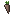
Plantações da estação
As 20 colheitas: 5 por estação (o milho vai do verão ao outono e a cebola do inverno à primavera). Numa estufa com teto de vidro, crescem o ano todo.

Sementes
Saem do mato quebrado na estação certa.

Peixes raros
17 peixes que só mordem em certos biomas, horários ou climas. Os 5 últimos saem só num buraco no gelo.
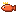
Pratos
Os 42 pratos da Cozinha, do Pão Caseiro aos pratos de monstro, como a Omelete de Olho de Aranha que faz subir paredes.
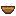
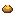
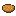
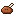
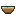
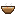
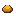
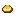
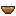
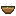
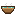
Artesanato e trufas
O que sai do Tacho do Artesão (com a qualidade do ingrediente) e a trufa que o porco feliz acha.
Elixires
Os 12 elixires da Bancada Alquímica, cada um no seu frasco.
Gemas
As 6 gemas (aqui, lapidadas). Engastadas em itens forjados, cada uma dá um bônus.
Componentes e óleos
Componentes da alquimia e os 5 óleos de lâmina.
Peles, couros e tecidos
O caminho do curtume: a pele crua, o couro curtido e os tecidos do tear.
Acessórios
Anéis, amuletos, cintos e itens de bolso para os espaços do /acessorios.
Minerais e ferramentas
Os minerais de cada bioma, a turfa, o Cinzel do Lapidador e a Bateia (2.46).
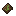
Arsenal novo
Adaga (uma em cada mão: Lâminas Duplas), faca e machadinha de arremesso, foice, bastão e chicote (2.51). Na bancada e na Forja, com 7 golpes de combo cada.


Artefatos de utilidade
Garras de Escalada, Corda de Rapel, Pêndulo do Rabdomante, Cantil e Bolsa de Sementes (2.49), e o Livro do Criador, que mostra a linhagem dos cavalos (2.50). Também o Apito do Domador, a Vela de Barco e as utilidades da 2.65: Chave de Construtor, Regador, Bancada de Bolso, Balde de Gelo, Trena e Cinto de Ferramentas.
Conjuntos dos minerais
Espada, picareta, machado, pá, enxada e as 4 peças de armadura de cada mineral (2.64): Âmbar, Jade, Pérola, Gelo, Pedra-Sangue, Magma e Quartzo Negro. A receita é a do jogo, com o mineral no lugar do ferro.
Cartas
As molduras das cartas por raridade e o Pacote de Cartas (2.47). Numa moldura de item na parede, a carta mostra o desenho do bicho.
Lendas
Itens únicos no servidor. Estes têm visual próprio; o arco, o escudo e as armaduras mantêm o do jogo.
Frutas do pomar
As 5 frutas que nascem penduradas nas árvores do pomar.
Bebidas do barril
Bebidas que envelhecem com os dias reais.
Méis
Os méis especiais da Colmeia do Apicultor.
Ervas
As ervas do Canteiro, que mudam com o lugar.
Armas com nome
Nascem assim na Forja (mais nas raridades altas), em baús e com os chefes. Na mão viram 3D.
Ovos dos Guardiões
Saem da Fusão Lendária no Altar do Domador e chocam no lugar certo: Qilin, Fenghuang, Longma, Baihu e Xuanwu. Só existe um de cada no servidor.
Céu e profundezas
O Balão de Cristal para descer das Ilhas do Céu, o que o Guardião dos Ventos deixa e as Sementes Brilhantes das Raízes de Luz.
Nada encontrado. Tente outra palavra.